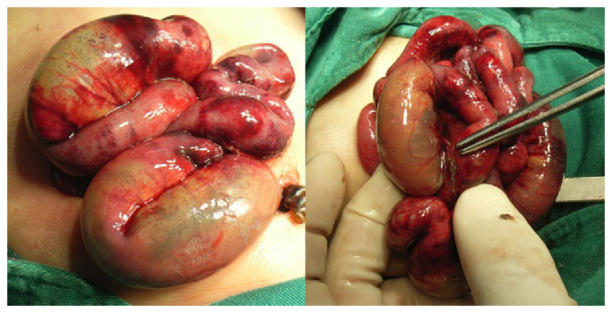
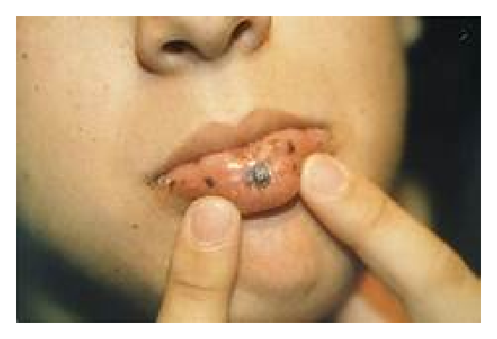
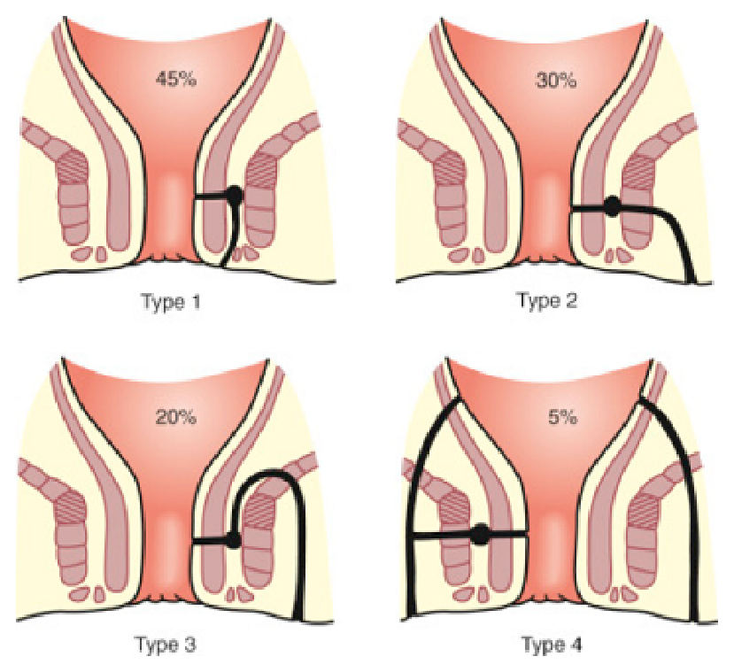
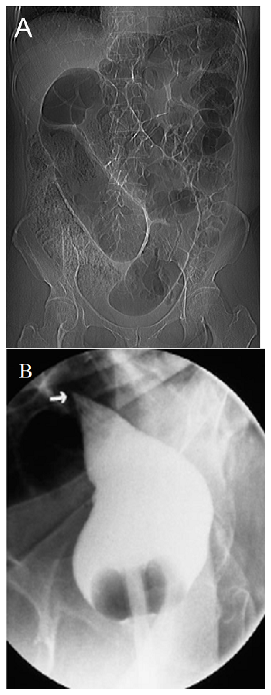
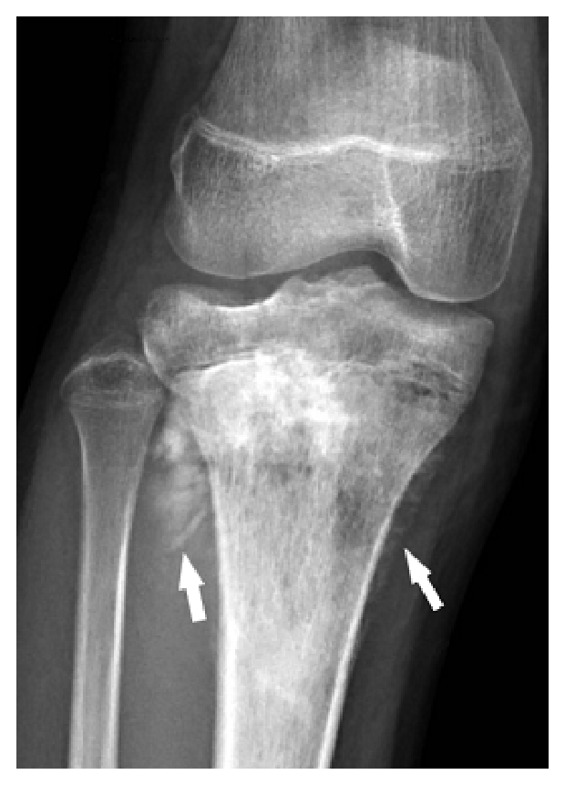
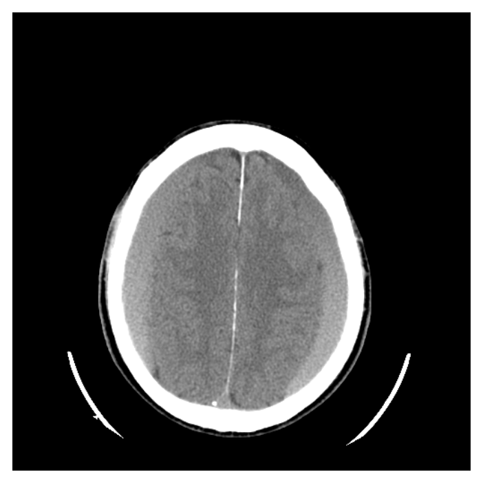

開卷有益 ／
醫師 ／ 醫學（五）（包括外科、骨科、泌尿科等科目及其相關臨床實例與醫學倫理） ／ 114 年第 1 次114 年第 1 次醫師醫學（五）（包括外科、骨科、泌尿科等科目及其相關臨床實例與醫學倫理）試題與答案
這一頁是民國 114 年第 1 次醫師醫學（五）（包括外科、骨科、泌尿科等科目及其相關臨床實例與醫學倫理）的整份歷屆試題，共 80 題，題目與標準答案出自考選部「國家考試試題及測驗式試題答案」開放資料，其中 80 題附有詳解。以下逐題列出題幹、選項與答案；要計時作答或記錄成績，請用線上練習。
考選部原始場次代碼：114020
線上作答這一科 →
全部 80 題
第 1 題
下列何者不是神經性休克的臨床表徵？
（A） 血壓變低（B） 心跳變快（C） 回到心臟的靜脈血流量減少（D） 病人常合併脊髓損傷答案：（B）
詳解與考點 正解：神經性休克源於交感神經張力喪失，常見低血壓合併相對性心搏過緩，而不是代償性心跳加快。（B）心跳變快不是其典型臨床表徵，故選 B。
A：周邊血管擴張使全身血管阻力下降，會造成血壓變低，是神經性休克的典型表現。
C：靜脈血管擴張會增加靜脈容量、減少靜脈回流與前負荷，因而降低心輸出量，敘述正確。
D：高位脊髓損傷可中斷交感神經輸出，是神經性休克常見的相關病因或情境，敘述正確。
本題考點：神經性休克（neurogenic shock）——交感神經失調造成 vasodilation、低血壓與相對性 bradycardia；須與出血性休克常見的 tachycardia 區分。
第 2 題
兩輛轎車對撞後30分鐘，救護車送來四位病人到急診室，下列那位病人應優先處置？
（A） 呈現呼吸窘迫現象，呼吸40次/分鐘（B） 左側胸部沒有呼吸聲且無頸靜脈怒張（C） 小腿開放性骨折，褲管浸濕了鮮血（D） 最先被送來的病人，且一直罵三字經與恐嚇醫護人員答案：（A）
詳解與考點 正解：大量傷患的優先處置，先處理立即威脅生命的 airway 或 breathing 問題。呼吸40次/分鐘且有呼吸窘迫代表嚴重呼吸功能障礙，可能迅速惡化，故（A）應優先處置。
B：單側無呼吸音需警覺氣胸或血胸，也須快速評估與處置；但題幹特別指出無頸靜脈怒張，未提供張力性氣胸的典型壓迫徵象，而（A）已有明顯呼吸窘迫，優先度較高。
C：開放性小腿骨折合併出血需要止血、包紮與固定，但若無立即威脅生命的失控性出血，優先於呼吸窘迫之後。
D：能持續辱罵與威脅醫護表示至少仍能有效發聲與通氣；行為管理重要，但不應凌駕於有即刻生理危象者。
本題考點：創傷檢傷與初級評估（trauma triage and primary survey）——依 ABC 優先處理 airway 與 breathing；respiratory distress 是立即處置的紅旗徵象。
第 3 題
為了減少腹腔鏡膽囊切除術後之併發症，須特別注意卡洛氏三角（Calot's triangle），下列何者為卡洛氏三角之組成？
（A） 總膽管，右肝動脈，膽囊管（B） 右肝管，肝臟下緣，膽囊管（C） 總肝管，肝臟下緣，膽囊管（D） 總膽管，肝臟下緣，腔動脈答案：（C）
詳解與考點 正解：腹腔鏡膽囊切除術中辨識 Calot's triangle，以避免傷及膽管或血管。現代臨床常指的肝膽囊三角由總肝管（common hepatic duct）、膽囊管（cystic duct）及肝臟下緣構成，故選（C）。
A：總膽管與右肝動脈並非本題所採 Calot's triangle 的兩條邊界；右肝動脈雖是手術時需警覺的變異血管，不能因此列為三角的組成。
B：右肝管是肝內膽管匯流後的分支，三角內側邊界應是總肝管而非右肝管。
D：腔動脈不是肝膽囊三角的解剖邊界；此選項同時將總肝管誤寫為總膽管。
本題考點：肝膽囊三角（hepatocystic triangle/Calot's triangle）——由 common hepatic duct、cystic duct、inferior surface of liver 構成；正確辨識可協助建立 critical view of safety。
第 4 題
感染來源控制（infection source control）之基本原則，下列何者錯誤？
（A） 感染物質有效引流（B） 移除感染區域之異物（C） 感染傷口清創（D） 強效抗生素使用答案：（D）
詳解與考點 正解：感染來源控制的定義，核心是以物理或手術方式移除、引流或清除感染灶。強效抗生素是抗微生物治療，不能取代來源控制本身，故把（D）列為基本原則是錯誤的。
A：膿液、感染性積液或阻塞造成的感染，須有效引流以降低菌量與壓力，屬來源控制的基本作法。
B：受感染的導管、植入物或異物常形成生物膜並持續感染，適當移除是來源控制的重要原則。
C：感染傷口的壞死組織與污染物須清創，才能降低感染負荷並改善組織癒合，屬來源控制。
本題考點：感染來源控制（infection source control）——drainage、debridement、移除 infected foreign body 是核心；antibiotic therapy 為輔助，不能代替清除感染源。
第 5 題
有關器官移植後癌症的發生，下列敘述何者錯誤？
（A） 器官移植後最常發生的癌症為皮膚癌（B） 器官移植後肝癌的發生與B型及C型肝炎病毒有關（C） 器官移植後卡波西氏肉瘤（Kaposi sarcoma）的發生與人類第八型疱疹病毒（human herpesvirus8）有關（D） 器官移植後發生癌症時應立即停止免疫抑制劑以避免癌症惡化答案：（D）
詳解與考點 正解：移植後癌症並非一律立刻停用所有免疫抑制劑。癌症處置須依腫瘤類型、移植物排斥風險與病人狀態個別調整免疫抑制，可能減量、改用不同藥物並合併腫瘤治療；立即全面停止可能導致急性排斥，故（D）錯誤。
A：長期免疫抑制使皮膚惡性腫瘤風險升高，皮膚癌是器官移植後常見的惡性腫瘤，敘述正確。
B：B型及C型肝炎病毒的慢性感染與肝細胞癌風險相關；移植後仍須針對病毒控制與肝癌風險追蹤，敘述正確。
C：人類第八型疱疹病毒（human herpesvirus 8）與 Kaposi sarcoma 的發生有關，免疫抑制會增加其發病風險，敘述正確。
本題考點：移植後惡性腫瘤（post-transplant malignancy）——長期 immunosuppression 增加皮膚癌與病毒相關腫瘤風險；癌症發生後的免疫抑制調整須平衡腫瘤控制與 graft rejection。
第 6 題
下列何者不是全靜脈營養（total parenteral nutrition, TPN）的併發症？
（A） 水分給太多或太少，可能造成水腫或脫水情況（B） 可能誘發腸道阻塞（C） 長期使用可能引起微量元素缺乏（D） 肝功能可能變差答案：（B）
詳解與考點 正解：TPN 繞過腸胃道給予營養，本身不會使腸內容物機械性阻塞，因此（B）不是其典型併發症。TPN 的問題主要來自輸注、導管、代謝與長期營養失衡，而非腸道阻塞。
A：輸液量或電解質處方不當可造成水分過多、肺水腫或脫水等體液問題，是 TPN 需要監測的併發症。
C：長期全靜脈營養若微量營養素補充不足，可出現微量元素或維生素缺乏，敘述正確。
D：TPN 可合併肝膽功能異常，例如脂肪肝或膽汁鬱積，尤其長期使用時更需追蹤肝功能。
本題考點：全靜脈營養（total parenteral nutrition, TPN）——併發症包括 fluid and electrolyte disturbance、導管感染、肝膽異常與 micronutrient deficiency；其不經腸道，非典型造成 mechanical bowel obstruction。
第 7 題
有關再餵食症候群（refeeding syndrome）的發生，下列何者正確？
（A） 長期禁食營養不良病人（malnourished patients）再餵食時，早期常因胰島素大量分泌造成低血糖（B） 只發生在經口進食病人（C） 餵食前先補充麩醯胺酸（glutamine）可預防併發症（D） 可能發生低血磷造成心律不整答案：（D）
詳解與考點 正解：長期營養不良者重新供給熱量後，胰島素上升使磷、鉀、鎂移入細胞；其中低血磷可削弱心肌與影響傳導，造成心律不整，故（D）正確。
A：胰島素上升會促進葡萄糖進入細胞，但再餵食症候群的典型代謝問題不是低血糖，而是低血磷、低血鉀、低血鎂及體液變化。
B：再餵食症候群可發生於口服、腸道或靜脈營養重新給予時；關鍵是營養不良後的熱量與碳水化合物負荷，而非給食途徑。
C：預防重點是先辨識高風險者、審慎漸進供給熱量、補充維生素並密切監測與補正電解質；麩醯胺酸不是此症候群的特異預防措施。
本題考點：再餵食症候群（refeeding syndrome）——insulin-mediated intracellular shift 可造成 hypophosphatemia、hypokalemia、hypomagnesemia；低血磷可導致 cardiac arrhythmia 與心肺神經肌肉併發症。
第 8 題
有關聽神經瘤（acoustic neuroma）之敘述，下列何者正確？
（A） 源自聽神經（cochlear nerve）（B） 手術切除之併發症最常見為旁邊的第六對外展神經受傷，病人術後產生複視（C） 以手術切除為主，radiosurgery用在手術後殘留腫瘤，很少第一線就使用（D） 雙側acoustic neuromas常與neurofibromatosis type 2有關答案：（D）
詳解與考點 正解：雙側 acoustic neuromas 的關聯疾病。聽神經瘤實為前庭神經鞘瘤（vestibular schwannoma），雙側病灶是 neurofibromatosis type 2 的典型表現，故選（D）。
A：腫瘤通常源自前庭神經的 Schwann cells，而非 cochlear nerve；名稱「聽神經瘤」容易使此選項看似合理，卻把真正起源誤指為耳蝸神經。
B：手術時較需注意鄰近的顏面神經與聽覺相關神經功能；第六對外展神經並非此病灶手術最常見的特定鄰近神經損傷。
C：手術、放射手術與觀察皆依腫瘤大小、症狀、年齡及生長情形選擇；radiosurgery 可作為特定小型或生長中腫瘤的初始治療，並非僅限手術後殘存腫瘤。
本題考點：前庭神經鞘瘤（vestibular schwannoma）——常被稱為 acoustic neuroma，起自 vestibular nerve Schwann cells；bilateral vestibular schwannomas 與 neurofibromatosis type 2 高度相關。
第 9 題
有關毛毛樣血管疾病（moyamoya disease），下列敘述何者正確？
（A） 成人建議以血管繞道手術治療（B） 較少發生在亞洲人（C） 只影響單側腦血管（D） 阻塞以後大腦動脈為主答案：（A）
詳解與考點 正解：moyamoya disease 的進行性顱內大血管狹窄與腦灌流不足。成人有症狀或血流動力學受損時，血管繞道重建（revascularization bypass）可改善腦灌流並降低缺血事件，故（A）正確。
B：毛毛樣血管疾病在東亞族群較常見，故稱較少發生在亞洲人錯誤。
C：疾病可為雙側，且經常呈雙側進行性病變；單側病變不能概括為其唯一表現。
D：典型阻塞位於顱內內頸動脈末端及近端大腦前動脈、大腦中動脈，而非以大腦後動脈為主；後循環也可受累，但不是本題所述主要型態。
本題考點：毛毛樣血管疾病（moyamoya disease）——progressive steno-occlusive disease 主要侵犯 terminal internal carotid artery 與其前循環分支；成人治療常考慮 cerebral revascularization bypass。
第 10 題
下列何種顱內血管異常疾病較可能是由外傷造成的？
（A） 毛毛樣血管病變（moyamoya disease）（B） 海綿狀血管畸形病變 （cavernous malformation）（C） 頸動脈–海綿竇瘻管（carotid-cavernous fistula）（D） 微血管樣血管擴張（capillary telangiectasia）答案：（C）
詳解與考點 正解：外傷後形成的顱內血管異常。頭部外傷可撕裂或破壞海綿竇附近的頸動脈壁，使高壓頸動脈血直接流入海綿竇，形成頸動脈－海綿竇瘻管（carotid-cavernous fistula），故選（C）。
A：毛毛樣血管病變是進行性的顱內動脈狹窄疾病，不是典型由單次外傷造成。
B：海綿狀血管畸形多屬先天性或散發性血管病變，可因出血才被發現，但外傷不是其典型成因。
D：微血管樣血管擴張通常為低流量、先天性血管異常，常偶然發現，與創傷性動靜脈交通不同。
本題考點：頸動脈－海綿竇瘻管（carotid-cavernous fistula）——traumatic CCF 是顱顏面外傷後可發生的高流量動靜脈瘻；須與先天性低流量 vascular malformations 區分。
第 11 題
有關脊椎狹窄（spinal stenosis）之敘述，下列何者最適當？
（A） spondylosis表示脊椎構造廣泛性的退化形變和過度增生，造成脊椎狹窄（spinal stenosis）的過程（B） 頸椎退化造成椎管內脊髓壓迫而產生脊髓病變，此一過程稱為cervical spondylolyticmyelopathy（C） 典型的脊髓病變表現為上肢肌肉無力萎縮，肌腱反射變強（hyperreflexia），但下肢本體感覺正常（D） 脊髓病變通常為多節性，通常病患接受減壓手術治療就能夠得到立即且滿意的恢復，不需再復健治療答案：（A）
詳解與考點 正解：spondylosis 與脊椎狹窄的關係。spondylosis 指脊椎及椎間盤隨退化產生的廣泛結構改變與骨質增生，可能使椎管、椎間孔逐漸變窄，進而形成 spinal stenosis，故選 A。
B：頸椎退化造成脊髓壓迫的名稱是 cervical spondylotic myelopathy，而非 cervical spondylolytic myelopathy；spondylolysis 是椎弓峽部缺損的不同病理概念。
C：頸椎脊髓病變可出現上肢無力、手部精細動作變差與反射亢進，但長徑束受損也會造成下肢痙攣、步態異常及本體感覺受損，不能說下肢本體感覺正常。
D：多節性壓迫的減壓手術目標是阻止惡化並改善功能，神經恢復常需時間且程度不一，術後仍可能需要復健；「立即且滿意恢復」是看似樂觀卻錯在忽略脊髓損傷的可逆性限制。
本題考點：脊椎退化症（spondylosis）可藉骨贅、椎間盤退化與韌帶肥厚造成脊椎狹窄（spinal stenosis）；頸椎退化性脊髓病變（cervical spondylotic myelopathy）要辨認上、下運動神經元及後索徵象。
第 12 題
下列關於Hangman's fracture敘述，何者正確？
（A） 主要是第二頸椎受到突然扭轉（rotation）力量所致（B） 造成第二頸椎雙側椎關節（facet）骨折（C） 很少發生神經功能損傷，可先以外固定方式治療（D） 嚴重的損傷會造成第一、二頸椎脫位；不穩定時，則需做內固定手術治療答案：（C）
詳解與考點 正解：Hangman's fracture 的典型特徵是 C2 椎弓根／峽部雙側骨折，常由過伸展合併軸向負荷造成；椎管因骨折移位而可相對擴大，所以神經學缺損少見。許多穩定型可先以頸圈或 halo 等外固定治療，故選 C。
A：突然單純旋轉較常聯想到寰樞椎旋轉性損傷；Hangman's fracture 的典型受力是過伸展與軸向負荷，不是單純 rotation。
B：骨折主要位於 C2 的 pars interarticularis/pedicle 區域，而非「雙側 facet」本身；兩者解剖位置不同。
D：嚴重型不穩定損傷可需要內固定，這一點看似合理；但 Hangman's fracture 典型相關的脫位是 C2-C3，而非 C1-C2，故整句不正確。
本題考點：Hangman's fracture 是軸椎（axis, C2）雙側椎弓峽部或椎弓根骨折；治療依穩定性與移位決定，穩定者常可先行外固定（external immobilization）。
第 13 題
頭部外傷後，下列何種症狀，可先觀察，不一定要馬上做電腦斷層攝影？
（A） 不明原因噴射式嘔吐3次（B） 單側肢體肌力少了1分（C） 暈眩（D） 頭部穿刺傷答案：（C）
詳解與考點 正解：頭部外傷後是否立刻做頭部電腦斷層，重點在顱內出血或顱骨開放性損傷的危險徵象。單獨暈眩缺乏局部神經缺損、反覆嘔吐或穿刺傷等高危線索時，可在嚴密神經學觀察下評估，不一定立即做 CT，故選 C。
A：不明原因噴射式嘔吐達 3 次屬反覆嘔吐，可能反映顱內壓升高或顱內傷害，應提高警覺並安排影像評估。
B：單側肢體肌力下降是局部神經學缺損，須考慮顱內出血或腦挫傷，不能僅觀察。
D：頭部穿刺傷可能伴隨顱骨穿透、異物或顱內損傷，影像檢查有助判斷傷道與出血，屬需儘速評估的情況。
本題考點：頭部外傷影像評估（head injury imaging）優先辨識局部神經缺損、反覆嘔吐與開放性或穿透性頭傷；神經學觀察（neurological observation）適用於低風險且病況穩定者。
第 14 題
有關手指外觀異常，下列敘述何者錯誤？
（A） swan-neck deformity：近端指關節的過度伸展和遠端指關節的過度屈曲（B） boutonnière deformity：近端指關節的過度屈曲和遠端指關節的過度伸展（C） gamekeeper thumb：大拇指掌指關節的橈側副韌帶受損（D） trigger finger：手指屈肌腱狹窄性肌腱鞘炎答案：（C）
詳解與考點 正解：本題問錯誤敘述。gamekeeper thumb 是拇指掌指關節尺側副韌帶（ulnar collateral ligament）受傷，常由外翻力造成；選項卻寫成橈側副韌帶，故錯誤的是 C。
A：swan-neck deformity 是近端指間關節過伸展、遠端指間關節過屈曲，敘述正確，故非答案。
B：boutonnière deformity 是近端指間關節過屈曲、遠端指間關節過伸展，敘述正確，故非答案。
D：trigger finger 為屈肌腱在腱鞘處發生狹窄性腱鞘炎，會造成手指彈響或卡住，敘述正確，故非答案。
本題考點：槌狀、鈕扣花與天鵝頸等手指變形（finger deformities）須以 PIP、DIP 姿勢辨認；gamekeeper thumb 的核心是拇指尺側副韌帶（ulnar collateral ligament）損傷。
第 15 題
下列何者不是穿通枝皮瓣（perforator flaps）的缺點？
（A） 可保留供給區肌肉及肌膜的功能（B） 不易分離單獨的穿通枝血管（C） 穿通枝血管分離增加手術時間（D） 解剖學上血管部位的變異性大且血管較短小，管壁較薄答案：（A）
詳解與考點 正解：本題問「不是缺點」。穿通枝皮瓣可在保留供區主要肌肉與肌膜的前提下取得皮膚及皮下組織，降低供區功能損失，這正是其重要優點，故選 A。
B：穿通枝口徑小、走行於肌肉或筋膜間，分離時需精細辨識與保護，技術上確實不易。
C：為保留肌肉並追蹤足夠長的血管蒂，穿通枝剝離往往較費時，是其手術上的限制。
D：穿通枝的位置與口徑存在個體解剖變異，且血管可能短小、管壁較薄，會增加設計與顯微吻合難度，屬缺點。
本題考點：穿通枝皮瓣（perforator flap）以穿通血管供應皮瓣，可減少供區肌肉犧牲；代價是血管解剖變異與顯微分離（microsurgical dissection）難度較高。
第 16 題
第一個異體臉部移植（facial transplantation）手術成功的案例是在那個國家？
（A） 美國（B） 英國（C） 法國（D） 俄羅斯答案：（C）
詳解與考點 正解：第一例成功的部分異體臉部移植（facial transplantation）於法國完成，因此本題答案為 C。此里程碑顯示複合組織異體移植能重建嚴重顏面缺損，但也伴隨長期免疫抑制與倫理議題。
A：美國後續發展多例臉部移植，卻不是第一例成功案例的所在地。
B：英國並非首例成功異體臉部移植的國家。
D：俄羅斯亦非首例成功案例的所在地。
本題考點：臉部移植（facial transplantation）屬血管化複合組織異體移植（vascularized composite allotransplantation）；其成敗不只取決於重建手術，亦涉及免疫抑制（immunosuppression）與醫學倫理。
第 17 題
在抽脂手術中所使用的tumescent fluid（lidocaine 0.05% and epinephrine 1:1,000,000），lidocaine的最高安全劑量限制為：
（A） 7 mg/kg（B） 15 mg/kg（C） 20 mg/kg（D） 35 mg/kg答案：（D）
詳解與考點 正解：題幹指定抽脂使用的 tumescent fluid 為 lidocaine 0.05% 合併 epinephrine 1:1,000,000；在此腫脹麻醉技術下，考題採用的 lidocaine 最高安全劑量為 35 mg/kg，故選 D。腎上腺素的血管收縮作用可減少全身吸收並延長局部作用，但仍須依體重計算總量並監測毒性。
A：7 mg/kg 是一般含腎上腺素局部浸潤麻醉常見的上限量級，未反映抽脂腫脹技術的特殊稀釋與延遲吸收條件。
B：15 mg/kg 低於本題所問 tumescent liposuction 的安全上限，並非正確數值。
C：20 mg/kg 同樣低於本題設定的最高安全劑量；看似較保守，但題目問的是該技術的上限而非任意保守劑量。
本題考點：腫脹麻醉（tumescent anesthesia）以稀釋 lidocaine 與 epinephrine 降低抽脂出血並延緩吸收；局部麻醉劑毒性（local anesthetic systemic toxicity）防治須按體重與總劑量計算。
第 18 題
50歲女性，接受定期篩檢乳房攝影（screening mammography），回診時報告敘述breast imagingreporting and data system（BI-RADS）category：0，診間醫師該如何向病人解釋？
（A） 無發現明顯異常（negative），定期追蹤即可（B） 良性病灶（benign），需每年定期追蹤（C） 懷疑異常（suspicious abnormality），需進一步切片檢查（D） 需進一步安排其他影像學檢查診斷答案：（D）
詳解與考點 正解：BI-RADS category 0 表示目前影像評估尚未完成（incomplete），需要調閱舊片、加做診斷性乳房攝影或超音波等進一步影像檢查後，才能作出最終分類；它不是癌症風險分類本身，故選 D。
A：無明顯異常是 BI-RADS 1（negative）的意義，與 category 0 不同。
B：良性病灶通常對應 BI-RADS 2（benign），可按常規篩檢追蹤，不是 category 0。
C：懷疑惡性而需考慮組織診斷屬 BI-RADS 4 的概念；category 0 的下一步是補足影像資料，而非直接等同要切片。
本題考點：乳房影像報告暨資料系統（Breast Imaging Reporting and Data System, BI-RADS）中，category 0 代表評估未完成（incomplete）；須與 BI-RADS 1 的陰性、BI-RADS 2 的良性及 BI-RADS 4 的可疑惡性區分。
第 19 題
蔡女士不幸發生瓦斯氣爆燒傷，經救護車送至急診室，急診醫師檢查初步生命跡象穩定，發現燒傷水泡、脫皮範圍在整個雙側上肢、前胸及腹部深二度燒傷，於急診室測量體重為60公斤；依據“Rule of nines”其燒傷面積為何？又根據”Parkland formula”前8小時應給與多少輸液？
（A） 36%；8640 ml乳酸鹽林格氏液（Lactated Ringer's solution）（B） 36%；4320 ml乳酸鹽林格氏液（Lactated Ringer's solution）（C） 27%；3888 ml 5%葡萄糖液（D5W）（D） 45%；6480 ml生理食鹽水（normal saline）答案：（B）
詳解與考點 正解：題幹的深二度燒傷範圍為雙側上肢、前胸、腹部。成人 Rule of nines 中雙側上肢為 9%＋9%=18%，前胸為 9%，腹部為 9%，總燒傷面積為 18%＋9%＋9%=36%。Parkland formula 的首日乳酸鹽林格氏液總量為 4 ml×60 kg×36=8640 ml；前 8 小時給一半，即 4320 ml，故選 B。
A：36% 的面積判讀正確，但 8640 ml 是首 24 小時總量，不是前 8 小時應輸注量。
C：27% 低估雙側上肢與軀幹前側範圍，且初期復甦建議用乳酸鹽林格氏液，不是 D5W。
D：45% 高估本題列出的體表面積，且 Parkland formula 所用液體為乳酸鹽林格氏液，不是 normal saline。
本題考點：九法則（Rule of nines）估算成人燒傷體表面積（total body surface area, TBSA）；Parkland formula 為 4 ml×體重（kg）×TBSA（%），首 8 小時輸注一半的乳酸鹽林格氏液（Lactated Ringer's solution）。
第 20 題
下列何者不是急性冠心症後可能造成的併發症（mechanical complication）？
（A） 急性主動脈瓣閉鎖不全（acute aortic regurgitation）（B） 乳突肌斷裂合併二尖瓣逆流（papillary muscle rupture with mitral regurgitation）（C） 心室中隔缺損（ventricular septal defect）（D） 游離壁破裂（free wall rupture）答案：（A）
詳解與考點 正解：急性冠心症後的典型機械性併發症是乳突肌斷裂、心室中隔破裂與左心室游離壁破裂。急性主動脈瓣閉鎖不全通常與主動脈剝離、感染性心內膜炎或主動脈根病變相關，並非心肌梗塞後典型機械性併發症，故選 A。
B：乳突肌斷裂會使二尖瓣突然失去支持，造成急性嚴重二尖瓣逆流，是心肌梗塞後危及生命的機械性併發症。
C：心室中隔缺損可由梗塞心肌壞死破裂形成，導致急性左向右分流，屬典型併發症。
D：游離壁破裂可造成心包填塞與猝死，也是急性心肌梗塞後的重要機械性併發症。
本題考點：心肌梗塞機械性併發症（mechanical complications of myocardial infarction）包括乳突肌斷裂（papillary muscle rupture）、心室中隔破裂（ventricular septal rupture）與游離壁破裂（free wall rupture）。
第 21 題
對於有intermittent claudication之病人，其ankle-brachial index（ABI）大多為：
（A） ＞1.0（B） 0.8～1.0（C） 0.5～0.7（D） 0.2～0.4答案：（C）
詳解與考點 正解：間歇性跛行（intermittent claudication）最常見於中度周邊動脈疾病。ABI 是踝部收縮壓除以上臂收縮壓；正常約 1.0 以上，而中度灌流下降常落在 0.5～0.7，故選 C。
A：ABI>1.0 多表示沒有顯著下肢動脈壓差，不符合典型動脈性間歇性跛行。
B：0.8～1.0 接近正常或僅輕度異常，較不足以代表題目所指大多數具典型跛行症狀者的中度缺血。
D：0.2～0.4 代表嚴重缺血，較常合併靜息痛、潰瘍或組織缺損；它看似也會有跛行，但嚴重度通常超過單純典型跛行。
本題考點：踝肱指數（ankle-brachial index, ABI）用於周邊動脈疾病（peripheral artery disease）評估；ABI 降低反映下肢灌流不足，數值越低通常表示缺血越嚴重。
第 22 題
對於主動脈剝離（aortic dissection）病人之血壓控制，下列何項處置最不適合？
（A） 靜脈注射短效乙型阻斷劑（B） 靜脈注射甲型及乙型阻斷劑（C） 靜脈注射乙型阻斷劑及血管擴張劑（D） 僅使用血管擴張劑答案：（D）
詳解與考點 正解：主動脈剝離的急性血壓控制要先降低心率與左心室射血速度，避免反射性交感活化增加剪力。若僅給血管擴張劑，血壓雖可能下降，卻可能引起反射性心搏過速與收縮力上升，反而增加主動脈壁剪力，最不適合，故選 D。
A：短效靜脈乙型阻斷劑可快速控制心率與搏出力，是初始 anti-impulse therapy 的合理選擇。
B：具甲、乙阻斷作用的靜脈藥物可同時協助控制心率與血壓，屬合理處置。
C：先以乙型阻斷劑抑制反射性心搏過速，再加血管擴張劑降壓，符合先控剪力、再降壓的原則。
本題考點：主動脈剝離（aortic dissection）的 anti-impulse therapy 先控制心率與心肌收縮力；血管擴張劑（vasodilator）若使用，應在乙型阻斷劑（beta-blocker）後搭配給予。
第 23 題
67歲男性，吸菸20年，糖尿病5年僅用口服血糖藥治療，因心肌梗塞入院，給了兩種抗血小板藥物，在主動脈幫浦（intra-aortic balloon pumping）支持下血壓80/60 mmHg，左心射出率約35%，且左主冠狀動脈有80%狹窄，左迴旋枝中段多處75%到85%狹窄，右冠狀動脈有兩處80%狹窄，下列建議何者最不適當？
（A） 高度建議先行冠狀動脈繞道術（coronary artery bypass grafting）（B） 可考慮放置更高階機械循環輔助（mechanical circulatory support），如葉克膜、心室輔助器（C） 應該等抗血小板藥效過後，才行手術，減少出血之可能（D） 不停跳之冠狀動脈繞道術式（off-pump CABG）與行心肺機之冠狀動脈繞道術式（on-pump CABG）相比，並無較佳之長期成果答案：（C）
詳解與考點 正解：病人為心因性休克、低射出分率與左主幹加三條血管嚴重冠心病，屬高風險且需緊急血運重建的情境。此時若為了等雙重抗血小板藥效完全消退而延後手術，會讓持續缺血與休克風險延續；出血風險須以輸血、止血與手術策略處理，而非一概等待，故最不適當的是 C。
A：左主幹與廣泛多血管病變合併低左心功能時，冠狀動脈繞道術可提供較完整的血運重建，高度建議有其臨床依據。
B：在 IABP 支持下仍低血壓且心輸出不足，可考慮較高階機械循環輔助以維持灌流，屬合理的橋接策略。
D：off-pump CABG 未穩定顯示較 on-pump CABG 有更佳長期結果；在此高複雜度病人，術式應依血流動力與血運重建完整性個別決定。
本題考點：心因性休克（cardiogenic shock）合併複雜冠心病需要即時血運重建（revascularization）評估；機械循環輔助（mechanical circulatory support）可作為橋接，抗血小板相關出血風險須與缺血急迫性權衡。
第 24 題
有關機械循環輔助（mechanical circulatory support）之敘述，下列何者錯誤？
（A） 根據IABP-SHOCK II trial報告，主動脈幫浦（IABP）可以對心因性休克之病患，提供比只使用最佳藥物治療更好的存活率（B） 在REMATCH trial報告中，植入型之左心室輔助器，可以對第四級心衰竭病人提供比最佳藥物治療更好的存活率（C） 如果要選擇同時對心肺衰竭都可以支持的循環輔助，只有葉克膜（extracorporeal membraneoxygenation, ECMO）（D） 長效型之心室輔助器（durable ventricular assist device）不但可以用來過渡到心臟移植（bridge to transplant），也被允許做為終極治療（destination therapy）答案：（A）
詳解與考點 正解：本題問錯誤敘述。IABP-SHOCK II trial 未顯示 IABP 在急性心肌梗塞併心因性休克時，相較最佳藥物治療能改善存活率；因此 A 說可提供較好存活率錯誤，故選 A。
B：REMATCH trial 顯示植入型左心室輔助器相較最佳藥物治療可改善末期心衰竭病人的存活，敘述正確，故非答案。
C：若需同時提供心臟循環與肺部氧合／通氣支持，ECMO 具此能力；IABP 與一般左心室輔助器主要提供循環支持，故敘述正確。
D：長效型心室輔助器可作為等待心臟移植的橋接，也可作為不適合移植者的終極治療，敘述正確。
本題考點：主動脈內氣球幫浦（intra-aortic balloon pump, IABP）可改善血流動力但未證實提升特定心因性休克族群存活；心室輔助器（ventricular assist device）可作 bridge to transplant 或 destination therapy；葉克膜（ECMO）可同時支援心肺。
第 25 題
71歲陳先生，因吞嚥困難至醫院檢查，證實是食道鱗狀上皮細胞癌（squamous cellcarcinoma），經一系列檢查，發現腫瘤侵犯食道肌肉層但未超過肌肉層，有三顆淋巴轉移，但無遠端轉移，細胞為中度分化（moderately differentiated）。根據AJCC第八版，陳先生為食道癌病理分期第幾期？
（A） IB（B） IIB（C） IIIB（D） IVB答案：（C）
詳解與考點 正解：腫瘤侵犯食道肌肉層但未穿出，為 T2；有 3 顆區域淋巴結轉移，為 N2；無遠端轉移，為 M0。依題幹指定的 AJCC 第八版，T2N2M0 的食道鱗狀上皮細胞癌病理分期為 IIIB，故選 C。
A：IB 對應較早期、淋巴結負荷較低的組合，無法容納本題已有 3 顆區域淋巴結轉移的 N2。
B：IIB 亦低估 N2 的區域淋巴結轉移程度；本題的關鍵不是只有腫瘤停在肌肉層，而是已有多顆淋巴結受累。
D：IVB 代表遠端轉移等晚期情況；題幹明示無遠端轉移（M0），故不符。
本題考點：食道癌 TNM 分期（TNM staging）先分別判定原發腫瘤深度 T、區域淋巴結 N 與遠端轉移 M；食道鱗狀上皮細胞癌（esophageal squamous cell carcinoma）的病理分期還須依 AJCC 分期群組整合。
第 26 題
承上題，根據食道癌之分期，接下來陳先生應接受何種治療？
（A） 接受食道切除及重建手術（B） 化學治療，然後再開刀（C） 標靶治療（D） 術前同時放射線治療加化學治療，然後再開刀答案：（D）
詳解與考點 正解：承上題病人為局部晚期、具區域淋巴結轉移但無遠端轉移的食道鱗狀上皮細胞癌。對可切除的局部晚期食道癌，常用策略是術前同步化學放射治療以縮小或降期腫瘤、處理微小局部與淋巴結病灶，再進行食道切除重建，故選 D。
A：直接手術較適用於較早期且無顯著淋巴結病變者；本題 N2 病變只做手術會忽略局部晚期疾病的多模式治療需求。
B：單獨先給化學治療後開刀缺少同步放射線治療，並非本題局部晚期食道鱗癌最典型的術前整合策略。
C：標靶治療並非此可切除、無遠端轉移局部晚期病人的標準根治性單獨治療；它看似較精準，卻不能取代局部控制與手術。
本題考點：局部晚期食道癌（locally advanced esophageal cancer）常採新輔助同步化學放射治療（neoadjuvant chemoradiotherapy）後食道切除術（esophagectomy）；治療選擇取決於可切除性、組織型與全身狀態。
第 27 題
有關肺腺癌（adenocarcinoma）的組織學分型（subtype）中，下列何者之預後最佳？
（A） 腺泡型（acinar）（B） 乳頭型（papillary）（C） 伏壁型（lepidic）（D） 微乳頭型（micropapillary）答案：（C）
詳解與考點 正解：肺腺癌組織學型中，伏壁型（lepidic predominant）是腫瘤細胞沿既有肺泡壁生長、破壞性間質侵犯較少的型態，整體預後最佳，故選 C。
A：腺泡型（acinar）是常見肺腺癌型態，但預後通常不如伏壁型。
B：乳頭型（papillary）較伏壁型具有較多侵襲性生長特徵，整體預後並非最佳。
D：微乳頭型（micropapillary）常伴較高復發與淋巴結轉移風險，是看似同為小乳頭結構卻預後較差的誘答。
本題考點：肺腺癌組織學分型（histologic subtyping of lung adenocarcinoma）具有預後意義；伏壁型（lepidic）較佳，微乳頭型（micropapillary）通常較差。
第 28 題
關於類肉瘤病（sarcoidosis）之敘述，下列何者正確？
（A） 病患肺部多會受影響（B） 不會導致肺纖維化（C） 非乾酪性肉芽腫（non-caseating granuloma）只會發生在肺部和兩側肺門淋巴結（D） 主要治療用藥為抗生素答案：（A）
詳解與考點 正解：類肉瘤病是可累及多器官的肉芽腫性疾病，但肺部與胸腔內淋巴結受累最常見，因此「病患肺部多會受影響」正確，故選 A。
B：類肉瘤病部分病人可進展為肺纖維化，尤其慢性肺部病灶，不能說不會造成肺纖維化。
C：非乾酪性肉芽腫可出現在皮膚、眼、肝臟、心臟與神經系統等多處，不限於肺部與兩側肺門淋巴結。
D：類肉瘤病並非細菌感染，主要治療並不是抗生素；有重要器官受累或症狀時可考慮抗發炎與免疫調節治療。
本題考點：類肉瘤病（sarcoidosis）為多系統非乾酪性肉芽腫（non-caseating granuloma）疾病；肺部受累（pulmonary involvement）最常見，慢性病程可導致肺纖維化（pulmonary fibrosis）。
第 29 題
有關食道裂孔疝氣（esophageal hiatal hernia），下列敘述何者正確？
（A） 每位病患一定會有症狀（B） type I為paraesophageal hernia（C） type II又稱rolling hernia（D） type III為sliding hernia答案：（C）
詳解與考點 正解：食道裂孔疝氣中，type II 是胃底經裂孔向胸腔突出、胃食道交界仍在原位的 paraesophageal hernia，亦稱 rolling hernia，故選 C。
A：裂孔疝氣可無症狀，尤其小型滑動型疝氣，不能說每位病患一定有症狀。
B：type I 是 sliding hernia，即胃食道交界上移；不是 paraesophageal hernia。
D：type III 是混合型（mixed hernia），同時具有滑動與旁食道成分，而非單純 sliding hernia。
本題考點：食道裂孔疝氣（hiatal hernia）分型中，type I 為滑動型（sliding hernia）；type II 為旁食道型（paraesophageal/rolling hernia）；type III 為混合型（mixed hernia）。
第 30 題
關於代謝及減重手術的適應症，下列何者錯誤？
（A） BMI＞40或BMI＞35合併肥胖導致的合併症（B） 無酒精依賴或使用毒品（C） 無須精神科醫師評估，即可接受手術（D） 65歲以上的患者若考慮手術，需要更謹慎的評估答案：（C）
詳解與考點 正解：本題問錯誤的代謝及減重手術適應症評估。減重手術前須評估精神疾病、飲食行為、物質使用、理解與長期配合能力；精神科或心理專業評估有助辨識風險，不能說完全無須評估即可手術，故選 C。
A：嚴重肥胖如 BMI>40，或 BMI>35 合併與肥胖相關疾病，是常見評估手術資格的體位條件，敘述方向正確。
B：酒精依賴或毒品使用會影響圍手術安全與術後遵從性，確認無活躍依賴或使用是合理評估項目。
D：高齡不是絕對排除條件，但 65 歲以上須更仔細衡量生理儲備、共病症與預期效益，敘述正確。
本題考點：代謝及減重手術（metabolic and bariatric surgery）適應症除 BMI 與肥胖共病症外，還包括多專業術前評估（multidisciplinary preoperative assessment）；精神健康（mental health）與物質使用（substance use）會影響手術安全及長期成效。
第 31 題
關於門靜脈高壓（portal hypertension）的敘述，下列何者錯誤？
（A） 門靜脈高壓定義為門靜脈壓力與肝靜脈壓力差大於5 mmHg（B） 由冠狀靜脈（coronary vein）及胃短靜脈（short gastric vein）匯入奇靜脈（azygos vein）產生之側支循環於臨床的重要性是造成胃食道靜脈曲張（C） caput medusae是由於left portal vein和epigastric vein之間臍靜脈（umbilical vein）的再疏通（recanalization）（D） 酒精性肝硬化（alcoholic cirrhosis）病人其門靜脈血流阻力發生之處在presinusoidal level答案：（D）
詳解與考點 正解：酒精性肝硬化的門靜脈血流阻力所在層級。肝硬化的纖維化與再生結節主要扭曲肝竇（sinusoid）及其周邊血管床，屬竇性或竇後阻力增加，並非竇前阻力；因此（D）的定位錯誤，故選 D。
A：門靜脈壓力梯度超過正常範圍是門靜脈高壓的基本定義；臨床顯著門靜脈高壓則需要更高的梯度，兩者不應混為一談，故本敘述可成立。
B：胃左靜脈與胃短靜脈的門靜脈側血流可經食道靜脈叢引流至奇靜脈系統，形成胃食道靜脈曲張，是重要的門體側支循環。
C：臍靜脈再通可把左門靜脈系統與腹壁靜脈相連，造成臍周放射狀擴張的 caput medusae，敘述符合其機轉。
本題考點：門靜脈高壓（portal hypertension）的壓力梯度與側支循環；肝硬化（cirrhosis）主要造成肝竇性血流阻力增加；胃食道靜脈曲張（gastroesophageal varices）與 caput medusae 的門體分流位置。
第 32 題
有關急性闌尾炎的敘述，下列何者錯誤？
（A） 除了白血球數目外，C-反應蛋白（C-reactive protein）、膽色素、前降鈣素（procalcitonin）檢測有助於預測穿孔性闌尾炎（B） 非複雜性闌尾炎接受內科抗生素治療，約四分之一病人在一年內須接受手術治療，且有較高比率發生複雜性闌尾炎（C） 單孔腹腔鏡手術的結果與美觀均比傳統腹腔鏡手術好（D） 急性闌尾炎是闌尾癌最常見的表徵答案：（C）
詳解與考點 正解：比較單孔與傳統腹腔鏡闌尾切除術的實證結論。單孔手術可能讓切口集中、外觀較受部分病人偏好，但不能概括說手術結果與美觀都比傳統腹腔鏡更好；其技術難度、疼痛與併發症並無一致的全面優勢，故（C）錯誤，故選 C。
A：白血球、C-反應蛋白、膽色素及前降鈣素可反映發炎或感染嚴重度；合併判讀有助辨識穿孔等複雜性闌尾炎，不能只靠單一數值。
B：非複雜性闌尾炎以抗生素治療可避免部分立即手術，但約四分之一病人會在一年內因復發或治療失敗接受闌尾切除；後續發生的複雜性闌尾炎風險須與初始手術策略比較並和病人討論。此項陳述的是非手術策略的限制。
D：闌尾腫瘤可表現為急性闌尾炎，因腫瘤阻塞闌尾腔而引發發炎；因此急性闌尾炎是其常見臨床表徵之一。
本題考點：急性闌尾炎（acute appendicitis）的複雜性風險評估；非手術抗生素治療（nonoperative antibiotic management）的復發與失敗風險；單孔腹腔鏡手術（single-incision laparoscopic surgery）不可被視為全面優於傳統手術。
第 33 題
有關胃惡性腫瘤之敘述，下列何者最恰當？
（A） 對於局部侵犯性胃癌，要有足夠切除範圍，此外淋巴腺的廓清術對其預後有幫助（B） 對於原發性胃的淋巴瘤，宜先手術再化學治療（C） 在已開發國家，雖整體胃癌發生率下降，但胃遠端的惡性腫瘤發生率卻上升（D） 早期胃癌不會淋巴轉移答案：（A）
詳解與考點 正解：局部侵犯性胃癌的根治原則。可切除的局部進展胃癌須達到足夠切除邊緣，並依腫瘤位置與分期做適當淋巴結廓清；淋巴結處理同時影響分期與局部控制，因此（A）最恰當，故選 A。
B：原發性胃淋巴瘤多以病理分型後的系統性治療為主，手術通常保留給穿孔、出血或阻塞等併發症，並非例行的先手術再化療。
C：已開發國家胃癌整體發生率雖下降，增加較受注意的是近端胃或胃食道交界處腫瘤；（C）卻稱胃遠端腫瘤上升，部位方向錯置。
D：早期胃癌侷限於黏膜或黏膜下層，但仍可能有淋巴結轉移；「早期」描述侵入深度，不能等同於沒有轉移。
本題考點：胃癌（gastric cancer）的根治性切除與淋巴結廓清；原發性胃淋巴瘤（primary gastric lymphoma）以系統性治療為主；早期胃癌（early gastric cancer）仍須評估淋巴結轉移風險。
第 34 題
目前較常用來評估肝臟功能的方法為Child-Pugh classification，下列何者不是評估項目？
（A） bilirubin（B） albumin（C） partial thromboplastin time（D） ascites答案：（C）
詳解與考點 正解：Child-Pugh classification 的五項構成。它評估 bilirubin、albumin、凝血功能的 prothrombin time 或 INR、腹水及肝性腦病變；partial thromboplastin time 不在評分項目中，故選 C。
A：bilirubin 反映膽紅素代謝與排泄異常，是 Child-Pugh classification 的評估項目。
B：albumin 反映肝臟合成功能，是 Child-Pugh classification 的評估項目。
D：ascites 代表門靜脈高壓與肝功能失代償程度，是 Child-Pugh classification 的臨床評估項目。
本題考點：Child-Pugh classification 的肝功能分級；肝臟合成功能（hepatic synthetic function）常以 albumin 與凝血功能評估；肝硬化失代償（decompensated cirrhosis）的腹水與肝性腦病變。
第 35 題
關於Bismuth-Corlette type I近端膽管癌（proximal cholangiocarcinoma）的手術治療，下列何項處置為最不必要之手術？
（A） 膽囊切除（B） 總膽管切除（C） 部分肝切除（D） 肝動脈及門靜脈周圍淋巴結廓清答案：（C）
詳解與考點 正解：Bismuth-Corlette type I 肝門部膽管癌侷限在總肝管、尚未延伸至左右肝管匯合處。手術重點是切除受侵犯的膽管、膽囊及區域淋巴結並取得陰性切緣；在未侵犯肝內膽管時，常規部分肝切除最不必要，故選 C。
A：膽囊與膽囊管鄰近肝門膽道手術範圍，膽囊切除有助完整處理膽道並建立重建路徑，並非最不必要。
B：type I 病灶位於總肝管，總膽管切除是取得病灶與切緣的重要步驟。
D：肝動脈及門靜脈周圍淋巴結屬肝門部膽管癌的區域淋巴結，廓清可供分期與局部控制，非本題所問的最不必要處置。
本題考點：肝門部膽管癌（perihilar cholangiocarcinoma）的 Bismuth-Corlette classification；根治性切除（curative resection）以陰性膽管切緣為目標；區域淋巴結廓清（regional lymphadenectomy）的分期價值。
第 36 題
關於胰臟癌的手術，下列何種情況仍適合做根除性切除？
（A） 肝臟有多個轉移（B） 腫瘤侵犯大腸（C） 腫瘤侵犯上腸繫膜動脈（superior mesenteric artery）（D） 腫瘤侵犯腹腔動脈（celiac artery）答案：（B）
詳解與考點 正解：胰臟癌能否達到根除性切除。遠端多發肝轉移代表全身性轉移，而侵犯上腸繫膜動脈或腹腔動脈通常表示無法安全取得根治切緣；相對地，若腫瘤局部侵犯大腸且可一併完整切除，仍可能進行多器官 en bloc 根除性切除，故選 B。
A：多個肝轉移是遠端轉移，局部胰臟切除無法達到根治目的，應以全身性治療與症狀處置為主。
C：上腸繫膜動脈侵犯會影響腸道重要動脈供應，通常屬不可切除的血管侵犯；它看似只是局部延伸，卻是決定可切除性的關鍵血管條件。
D：腹腔動脈侵犯亦多表示局部晚期、難以根治切除，不能視為一般可直接切除的侵犯。
本題考點：胰臟癌（pancreatic cancer）的可切除性評估；血管侵犯（vascular involvement）尤其上腸繫膜動脈與腹腔動脈的意義；多器官整塊切除（en bloc resection）可處理部分可完全切除的鄰近器官侵犯。
第 37 題
下列關於短腸症候群（short bowel syndrome）的敘述，何者錯誤？
（A） 短腸症候群的臨床標誌（hallmarks）包括：腹瀉（diarrhea）、液體和電解質缺乏（fluid andelectrolyte deficiency）及營養不良（malnutrition）（B） 短腸症候群早期治療目標為控制腹瀉、補充水分及電解質、儘快給與TPN（C） 一旦可進食時，初期以高糖及高蛋白食物為主，以增加腸道吸收（D） 食物中的脂肪通常以short-chain triglycerides為佳答案：（D）
詳解與考點 正解：短腸症候群的飲食脂肪型態。短腸症候群為增加可吸收熱量，脂肪補充通常會考慮中鏈三酸甘油酯（medium-chain triglycerides），因其吸收較不依賴膽鹽與淋巴運輸；（D）寫成 short-chain triglycerides，並非此處常用的營養策略，故選 D。
A：腹瀉、水分與電解質缺乏及營養不良是短腸症候群吸收面積不足的典型表現。
B：早期處置須先穩定體液與電解質、控制高輸出腹瀉，並在需要時給予腸外營養（total parenteral nutrition, TPN），以度過腸道適應期。
C：恢復進食後須逐步提供足夠蛋白質與可耐受熱量，促進腸道適應；實際碳水與脂肪比例仍要依剩餘腸段及結腸是否保留個別調整。
本題考點：短腸症候群（short bowel syndrome）的體液、電解質與營養支持；腸道適應（intestinal adaptation）與腸外營養；中鏈三酸甘油酯（medium-chain triglycerides）的吸收特性。
第 38 題
一位35歲男性因multiple endocrine neoplasia type 2罹患雙側pheochromocytoma，接受雙側腎上腺切除後產生Nelson’s syndrome，下列症狀何者與Nelson’s syndrome較無關？
（A） hyperpigmentation（B） visual field defect（C） headache（D） hearing impairment答案：（D）
詳解與考點 正解：Nelson’s syndrome 是 ACTH 依賴型 Cushing disease 病人在雙側腎上腺切除後，腦下垂體 corticotroph tumor 進展所致，並非所有雙側腎上腺切除後都會發生。題幹將 MEN2 的雙側 pheochromocytoma 手術與此症候群串連，在病因上不合理；若接受題目指定的 Nelson’s syndrome，皮膚色素沉著、頭痛與視野缺損均可見，聽力障礙不是典型表現，故選 D。
A：ACTH 及相關黑色素細胞刺激作用增加會導致 hyperpigmentation，是 Nelson’s syndrome 的特徵。
B：腦下垂體腫瘤向上壓迫視交叉時可造成 visual field defect，故與本症相關。
C：腦下垂體腫瘤的局部占位效應可引起 headache，並非不相關症狀。
本題考點：Nelson’s syndrome 發生於 Cushing disease 的雙側腎上腺切除後；ACTH（adrenocorticotropic hormone）過度分泌造成 hyperpigmentation；腦下垂體腫瘤（pituitary tumor）可造成頭痛與視野缺損。
第 39 題
一位40歲女性因高血鈣被懷疑罹患primary hyperparathyroidism，因近親有高血鈣的家族史，為排除familial hypocalciuric hypercalcemia，下列何項檢查最為適當？
（A） serum intact parathyroid hormone（PTH）（B） 24-hour urine calcium（C） sestamibi scan（D） neck computed tomography（CT）scan答案：（B）
詳解與考點 正解：以 familial hypocalciuric hypercalcemia 與 primary hyperparathyroidism 鑑別。前者的鈣感受器異常使腎臟鈣排泄偏低，因此 24-hour urine calcium 可檢視低尿鈣的特徵，是最適當的初步鑑別檢查，故選 B。
A：兩種狀況的 PTH 都可能正常偏高或不適當地未受抑制，單測 serum intact PTH 無法可靠區分。
C：sestamibi scan 是疑似原發性副甲狀腺功能亢進需手術時的定位工具，不是用來先排除遺傳性低尿鈣高血鈣症的檢查。
D：neck CT scan 同樣是定位解剖構造的工具，不能以尿鈣排泄型態鑑別這兩種高血鈣原因。
本題考點：家族性低尿鈣高血鈣症（familial hypocalciuric hypercalcemia）；原發性副甲狀腺功能亢進（primary hyperparathyroidism）；24-hour urine calcium 在高血鈣鑑別診斷的用途。
第 40 題
58歲男性病患曾經因罹患濾泡狀甲狀腺癌接受過全甲狀腺切除及三次放射碘治療，目前檢驗結果：thyroglobulin 3872.43 ng/mL，頸部超音波未發現再犯，131I WBS亦未顯示再犯，FDG-PET顯示肺部及骨骼多處轉移病灶，肺部CT追蹤發現肺轉移病灶明顯增多，下列處置何者最不適當？
（A） 應再予以大劑量放射碘治療（B） 應予以sorafenib治療（C） 應予以lenvatinib治療（D） 胸椎骨轉移疼痛可予以緩解性放射治療答案：（A）
詳解與考點 正解：thyroglobulin 很高、病灶在 FDG-PET 進展，卻在 131I whole-body scan 不顯影，代表放射碘難治性分化型甲狀腺癌（radioiodine-refractory differentiated thyroid cancer）。既然轉移病灶已不攝取放射碘，再給大劑量放射碘不太可能有效且增加累積毒性，是最不適當處置，故選 A。
B：sorafenib 是可用於進展性、放射碘難治性分化型甲狀腺癌的多標靶酪胺酸激酶抑制劑，與本例病勢進展相符。
C：lenvatinib 亦可用於進展性、放射碘難治性分化型甲狀腺癌；它看似不是傳統放射碘治療，正因病灶失去攝碘能力而成為合理全身性治療選項。
D：疼痛性骨轉移可採緩解性放射治療以控制局部疼痛與降低骨骼相關症狀，屬症狀導向的適當處置。
本題考點：放射碘難治性分化型甲狀腺癌（radioiodine-refractory differentiated thyroid cancer）的辨識；FDG-PET 與 131I whole-body scan 的不一致；多標靶酪胺酸激酶抑制劑（multikinase inhibitor）與骨轉移緩解治療。
第 41 題
有關下列乳房疾病的處理，何者正確？
（A） fibrocystic change為physiologic change，追蹤即可，不必手術（B） core biopsy發現atypical ductal hyperplasia，應小心追蹤，不必切除病灶（C） fibroadenoma的malignant potential高，必須手術切除（D） malignant phyllodes tumor術後應加做輔助化學治療答案：（A）
詳解與考點 正解：各乳房病變的標準處置。fibrocystic change 是常見的良性生理性變化；在臨床、影像與必要病理評估一致且無可疑病灶時，以症狀處理與追蹤為主，不需要例行手術，故選 A。
B：core biopsy 顯示 atypical ductal hyperplasia 時，針切標本可能低估鄰近更高級別病灶，通常須進一步切除評估，不能只說追蹤即可。
C：fibroadenoma 多為良性、惡性轉化風險極低，是否切除取決於大小、生長、症狀或診斷不確定性，並非一律必須手術。
D：malignant phyllodes tumor 的主要治療是取得足夠切緣的手術切除；輔助化學治療並非術後例行標準處置。
本題考點：乳腺纖維囊腫變化（fibrocystic change）的良性處理；非典型導管增生（atypical ductal hyperplasia）的升級風險；葉狀腫瘤（phyllodes tumor）以手術切除為主。
第 42 題
進行腋下淋巴結廓清時，若下列何者受損可能導致闊背肌（latissimus dorsi）無力？
（A） 外側胸神經（lateral pectoral nerve）（B） 胸背神經（thoracodorsal nerve）（C） 長胸神經（long thoracic nerve）（D） 肋間臂神經（intercostobrachial nerve）答案：（B）
詳解與考點 正解：闊背肌的支配神經。胸背神經（thoracodorsal nerve）支配闊背肌，腋下淋巴結廓清時若受損會造成肩關節伸展、內收與內旋力量下降，故選 B。
A：外側胸神經主要支配胸大肌，受損不會直接造成闊背肌無力。
C：長胸神經支配前鋸肌，受損典型表現是翼狀肩胛，這是腋下手術常見且看似相關的誘答，但目標肌肉不是闊背肌。
D：肋間臂神經主要提供上臂內側皮膚感覺，受損可有感覺異常，非闊背肌運動無力。
本題考點：胸背神經（thoracodorsal nerve）支配闊背肌（latissimus dorsi）；長胸神經（long thoracic nerve）受損造成翼狀肩胛；腋下淋巴結廓清（axillary lymph node dissection）的神經保留。
第 43 題
Poly ADP ribose polymerase（PARP）抑制劑用於下列何種轉移性乳癌病患最為合適？
（A） ER：90%，PR：50%，HER2/neu：0，且不具BRCA1/2突變（B） ER：0%，PR：0%，HER2/neu：0，且具BRCA1/2突變（C） ER：0%，PR：0%，HER2/neu：3+，且Ki-67＞50%（D） ER：90%，PR：50%，HER2/neu：3+，且Ki-67＞20%答案：（B）
詳解與考點 正解：PARP inhibitor 的合成致死條件：腫瘤須有 germline BRCA1/2 mutation 所致的同源重組修復缺陷。轉移性 HER2-negative 乳癌合併 BRCA1/2 突變最符合此生物標記；（B）為三陰性且具 BRCA1/2 突變，故選 B。
A：雖為 HER2-negative 荷爾蒙受體陽性乳癌，但沒有 BRCA1/2 突變，缺少本題 PARP inhibitor 的關鍵適用生物標記。
C：HER2/neu 3+ 指向 HER2-positive 乳癌，治療優先考慮抗 HER2 策略；Ki-67 高不等於具 BRCA 相關同源重組缺陷。
D：此為荷爾蒙受體與 HER2 都陽性的腫瘤，應依其受體特徵選擇內分泌及抗 HER2 等治療，不能因 Ki-67 升高就推論適合 PARP inhibitor。
本題考點：PARP 抑制劑（PARP inhibitor）與合成致死（synthetic lethality）；BRCA1/2 mutation 造成的同源重組修復缺陷（homologous recombination deficiency）；轉移性 HER2-negative breast cancer 的標靶選擇。
第 44 題
一新生兒接受腹部手術，術中腸道的外觀如圖所示，下列何者為此病人最可能之診斷？

（A） 腸扭結（intestinal volvulus）（B） 胎便性腹膜炎（meconium peritonitis）（C） 壞死性腸炎（necrotizing enterocolitis）（D） 胎便性腸阻塞（meconium ileus）答案：（C）
詳解與考點 正解：圖中可見多段腸袢明顯腫脹、鬱血呈暗紅紫色，且腸壁外觀不均勻、疑有缺血壞死性改變；這種瀰漫而斑駁的受損腸道外觀最符合壞死性腸炎（necrotizing enterocolitis, NEC）。NEC 是新生兒常見的嚴重腸道發炎與缺血性壞死疾病，嚴重時須手術切除無活性的腸段，故選 C。
A：腸扭結（intestinal volvulus）也可造成腸道鬱血、缺血而呈暗紅色，是容易混淆的誘答；但其典型術中重點為腸繫膜根部扭轉、腸袢繞軸旋轉所致的特定阻塞與缺血範圍。本圖著重多段腸壁瀰漫腫脹與斑駁壞死樣變化，較符合 NEC。
B：胎便性腹膜炎（meconium peritonitis）源於胎兒期腸穿孔後胎便漏入腹腔，常見腹腔內鈣化、沾黏、假性囊腫或胎便污染；圖示主要是腸管本身的出血性腫脹與壞死樣外觀，並非以腹膜腔胎便反應為主。
D：胎便性腸阻塞（meconium ileus）是濃稠胎便阻塞末端迴腸，術中可見腸內容物黏稠、阻塞近端腸袢擴張；它本身不以多段腸壁暗紅紫色、瀰漫發炎壞死為典型表現，故不符。
本題考點：壞死性腸炎（necrotizing enterocolitis, NEC）是新生兒腸道發炎、缺血與壞死的疾病；術中須辨識腸壁顏色、活性及壞死範圍；須與腸扭結（intestinal volvulus）的機械性缺血及胎便性腸阻塞（meconium ileus）區別。
第 45 題
承上題，對此病人所罹患之疾病，下列敘述何者錯誤？
（A） 好發於迴盲瓣附近的小腸（terminal ileum），有時也會侵犯大腸（B） 未必出現白血球增多（leukocytosis）（C） 隨病況加重常併發血小板減少症（thrombocytopenia）（D） 只發生在早產兒答案：（D）
詳解與考點 正解：承前題診斷為壞死性腸炎（necrotizing enterocolitis, NEC），關鍵是其高風險族群與病程。NEC 最常見於早產兒，卻非只會發生在早產兒；足月新生兒在特定高風險情境也可能罹病，因此（D）的絕對化敘述錯誤，故選 D。
A：NEC 常侵犯末端迴腸與迴盲部附近，亦可累及結腸，符合腸道血流與菌叢相關的病變分布。
B：NEC 的發炎反應不一定表現為白血球增多，嚴重感染或骨髓反應耗竭時甚至可見白血球低下，故此敘述正確。
C：病況加重時可因敗血症、消耗或瀰漫性血管內凝血而出現血小板減少，是病情嚴重度警訊。
本題考點：壞死性腸炎（necrotizing enterocolitis, NEC）的好發部位與高風險族群；新生兒敗血症（neonatal sepsis）的白血球反應可不典型；血小板減少症（thrombocytopenia）作為嚴重病程警訊。
第 46 題
疝氣（hernia）係指器官或組織經由鄰近之壁層缺陷突出。腸道經由腹膜腔內之腸繫膜缺損突出稱之為下列何者？
（A） 外部疝氣（external hernia）（B） 內部疝氣（internal hernia）（C） 鼠蹊疝氣（inguinal hernia）（D） 腹壁疝氣 （ventral hernia）答案：（B）
詳解與考點 正解：突出路徑仍在腹膜腔內。腸道經腸繫膜缺損移位，沒有穿過腹壁形成外部腫塊，定義上屬內部疝氣（internal hernia），故選 B。
A：外部疝氣是內容物經腹壁或鼠蹊等外部缺損突出，本題的缺損在腸繫膜內，位置不符。
C：鼠蹊疝氣是經鼠蹊管或鼠蹊區弱點突出，並非泛指所有腸繫膜缺損造成的腸道移位。
D：腹壁疝氣是經前腹壁缺損突出；腸繫膜是腹腔內結構，因此不能歸類為腹壁疝氣。
本題考點：內部疝氣（internal hernia）的定義；腸繫膜缺損（mesenteric defect）造成的腸道嵌頓；外部疝氣（external hernia）與腹腔內疝氣的解剖區別。
第 47 題
神經母細胞瘤（neuroblastoma）約占兒童癌症10%，大多病童因診斷時多已較後期，故預後較差，但依據國際神經母細胞瘤分期系統（International Neuroblastoma Staging System）之4S分期一般則預後較佳，下列何者不屬於4S分期？
（A） 一歲以下發病（B） 限局部原發腫瘤且擴散限於皮膚（C） 限局部原發腫瘤且擴散限於肝臟（D） 限局部原發腫瘤且擴散限於骨頭答案：（D）
詳解與考點 正解：International Neuroblastoma Staging System 的 4S 特殊分期。4S 發生於嬰兒，原發腫瘤局限，轉移限於皮膚、肝臟及骨髓；骨頭轉移不屬於 4S 的允許轉移部位，故選 D。
A：4S 的年齡條件是嬰兒期，故一歲以下發病符合其核心條件。
B：局部原發腫瘤合併皮膚轉移屬 4S 所允許的轉移型態。
C：局部原發腫瘤合併肝臟轉移亦屬 4S 所允許的轉移型態。
本題考點：神經母細胞瘤（neuroblastoma）的 International Neuroblastoma Staging System；4S 分期（stage 4S）的嬰兒期與特殊轉移分布；骨轉移（bone metastasis）不屬 4S 範圍。
第 48 題
下列有關先天性小腸閉鎖（jejunoileal atresia）的敘述，何者最不適當？
（A） 產前超音波羊水可能正常（B） 第IIIb型形狀呈現蘋果樹異常（apple tree deformity）（C） 新生兒可能無法解出胎便（D） 發生原因與腸繫膜血管的發育有關答案：（B）
詳解與考點 正解：jejunoileal atresia 的分型外觀。type IIIb 的標準名稱為 apple-peel deformity 或 Christmas-tree deformity，不是 apple tree deformity；因此（B）的英文名稱不正確，為最不適當的敘述，故選 B。
A：小腸閉鎖的阻塞位置與程度不同，產前超音波未必都呈現明顯羊水過多，羊水可能正常。
C：完全腸道阻塞使胎便無法順利排出，新生兒可出現未解胎便或排便延遲。
D：jejunoileal atresia 被認為與胎兒期腸繫膜血管供應中斷或缺血事件有關，符合其常見病因概念。
本題考點：先天性空腸迴腸閉鎖（jejunoileal atresia）的血管性病因；apple-peel deformity 與 type IIIb；新生兒腸阻塞（neonatal intestinal obstruction）的產前與出生後表現。
第 49 題
下列先天性肺部異常（bronchopulmonary malformations），何者最不容易出現自發性氣胸（spontaneous pneumothorax）？
（A） 先天性肺葉氣腫（congenital lobar emphysema）（B） 支氣管源性囊腫（bronchogenic cyst）（C） 游離肺（pulmonary sequestration）（D） 先天性肺部呼吸道畸形（congenital pulmonary airway malformation）答案：（C）
詳解與考點 正解：各先天性肺部異常是否含有容易破裂或過度充氣的肺泡性、囊性病灶。游離肺（pulmonary sequestration）是無功能肺組織接受異常體循環供血，通常不與正常支氣管樹交通，較不易形成可破裂而造成自發性氣胸的空氣囊腔，故選 C。
A：先天性肺葉氣腫可因氣道阻塞機轉造成肺葉過度膨脹，過度充氣使氣胸成為可能的併發症。
B：支氣管源性囊腫若與氣道相關或發生感染、破裂，仍可能造成胸腔內空氣相關併發症，不能說最不容易。
D：先天性肺部呼吸道畸形含多發囊性病灶，囊腫與氣道交通或破裂可表現為氣胸，是比游離肺更合理的誘答。
本題考點：游離肺（pulmonary sequestration）的異常體循環供血與缺乏支氣管交通；先天性肺葉氣腫（congenital lobar emphysema）的過度充氣；先天性肺部呼吸道畸形（congenital pulmonary airway malformation）的囊性病灶。
第 50 題
小腸息肉症合併下列症狀（如圖），最常見的基因缺損為：

（A） PTEN（B） STK11（C） P53（D） APC答案：（B）
詳解與考點 正解：小腸息肉合併圖中嘴唇及口周可見的深褐色、黑色黏膜皮膚色素斑，典型指向 Peutz-Jeghers syndrome。此症為常染色體顯性遺傳的錯構瘤性息肉症候群，最常見與腫瘤抑制基因 STK11 缺損有關，故選 B。
A：PTEN 缺損可見於 PTEN hamartoma tumor syndrome，例如 Cowden syndrome；雖可有錯構瘤與腸道息肉，但其典型黏膜皮膚表現並非本圖所示的口唇黑色素斑，故不符。
C：P53 是多種癌症相關的腫瘤抑制基因，胚系突變可造成 Li-Fraumeni syndrome；它不會形成小腸錯構瘤息肉合併口唇色素斑的典型組合。
D：APC 缺損與家族性腺瘤性息肉症（familial adenomatous polyposis, FAP）有關，特徵是大腸大量腺瘤性息肉，而非小腸錯構瘤性息肉合併口周黑色素沉著。
本題考點：Peutz-Jeghers syndrome 的特徵為胃腸道錯構瘤性息肉（hamartomatous polyps）及口唇、口腔黏膜色素斑；STK11 是其相關的腫瘤抑制基因；應與 APC 相關的家族性腺瘤性息肉症（FAP）及 PTEN 相關錯構瘤症候群鑑別。
第 51 題
附圖中何者屬於transsphincteric type瘻管？

（A） Type 1（B） Type 2（C） Type 3（D） Type 4答案：（B）
詳解與考點 正解：圖中 Type 2 的瘻管自肛管內口穿過內括約肌與外括約肌，進入坐骨肛門窩後通向皮膚外口；這正是經括約肌型肛門瘻管（transsphincteric fistula）的走行，故選 B。
A：Type 1 的瘻管走在內、外括約肌之間的括約肌間平面，未穿越外括約肌，屬括約肌間型（intersphincteric），不是經括約肌型。
C：Type 3 的瘻管先在括約肌間向上延伸，繞越外括約肌上方後再向外通至皮膚，屬上括約肌型（suprasphincteric）；雖然最終到達肛門外，但不是直接穿過外括約肌。
D：Type 4 的瘻管由直腸或肛管上方穿出、越過整個括約肌複合體後通向皮膚，屬括約肌外型（extrasphincteric），其路徑不穿越肛門括約肌。
本題考點：肛門瘻管 Parks 分類（Parks classification）依瘻管與內、外肛門括約肌的關係區分；經括約肌型（transsphincteric fistula）會穿過內括約肌及外括約肌；辨識瘻管走行可評估括約肌受損與術後失禁風險。
第 52 題
痔瘡結紮術最適合下列何種類型的痔瘡？
（A） 血栓性外痔（B） 血栓性內痔（C） 內外混合痔（D） 內痔答案：（D）
詳解與考點 正解：痔瘡結紮術的作用位置。橡皮圈結紮（rubber band ligation）須在齒狀線以上套住內痔黏膜，使其缺血、壞死後纖維化固定，因此最適合內痔，故選 D。
A：血栓性外痔位於齒狀線以下、疼痛感覺豐富，橡皮圈結紮會造成明顯疼痛，並非適當處置。
B：血栓性內痔的急性血栓問題不是以選擇性黏膜結紮為主要處理目標，應依急性症狀與是否嵌頓評估。
C：內外混合痔跨越齒狀線，外痔成分使單純橡皮圈結紮無法完整且舒適地處理，不是最適合的對象。
本題考點：橡皮圈結紮（rubber band ligation）的適應症；齒狀線（dentate line）上下的感覺與解剖差異；內痔（internal hemorrhoid）與外痔（external hemorrhoid）的處置區別。
第 53 題
在美國，每年估計有1%～2%的孕婦需要進行必須的外科手術，依據美國胃腸內視鏡外科醫生協會（The Society of American Gastrointestinal Endoscopic Surgeons）建議在懷孕期間進行腹腔鏡手術的指南，下列與腹腔鏡手術有關的準則，何者錯誤？
（A） 診斷性腹腔鏡檢查法（diagnostic laparoscopy）可以考慮用於懷孕患者的急性腹腔檢查與治療（B） 孕婦腹腔鏡檢查期間應監測術中的CO2濃度（C） 腹腔鏡膽囊切除術是妊娠期膽囊疾病患者的首選治療方法，但只限於懷孕後期（thirdtrimester）（D） 懷孕期間有症狀的總膽管結石（choledocholithiasis），可以考慮用經內視鏡逆行性膽胰管攝影術（endoscopic retrograde cholangiopancreatography, ERCP）及括約肌切開取石術，合併腹腔鏡膽囊切除術處理答案：（C）
詳解與考點 正解：懷孕期腹腔鏡膽囊切除術的時機。若孕婦有症狀且需手術的膽囊疾病，腹腔鏡膽囊切除可在妊娠任何期別依臨床需要進行，不能只限於懷孕後期；（C）的限制錯誤，故選 C。此題涉及指南建議的時效敏感內容，時機原則須以現行院內與專科指引確認。
A：diagnostic laparoscopy 可在適當評估與手術技術下，用於孕婦急腹症的診斷及必要治療，敘述正確。
B：腹腔鏡氣腹使用 CO2，術中監測母體 CO2 有助避免過度通氣或高碳酸血症並維持母胎生理穩定，敘述正確。
D：有症狀的總膽管結石可考慮 ERCP 加括約肌切開與取石，並依病況處理膽囊病灶；須採減少胎兒暴露的措施，但方向上並非錯誤。
本題考點：妊娠期腹腔鏡手術（laparoscopy during pregnancy）的適應症與期別；膽石症（cholelithiasis）及總膽管結石（choledocholithiasis）的處置；ERCP（endoscopic retrograde cholangiopancreatography）的孕期風險控制。
第 54 題
消化性潰瘍穿孔（perforated peptic ulcer）是典型的外科急症，其手術方式有腹腔鏡手術與開腹手術，下列敘述何者錯誤？
（A） 消化性潰瘍穿孔也可以腹腔鏡治療，小於1厘米的穿孔通常可以用縫合方式修補穿孔，並用血流支配良好的網膜支撐（B） 在2001年以後進行的隨機對照試驗中，腹腔鏡手術比開腹手術需更多時間（C） 不論腹腔鏡或開腹手術，對於較大的穿孔或具有纖維化的潰瘍，皆可用血流支配良好的網膜進行修復（D） 比較此兩種方法，腹腔鏡手術後住院時間較短，且術後感染併發症減少答案：（B）
詳解與考點 正解：比較消化性潰瘍穿孔的腹腔鏡與開腹修補結果。腹腔鏡修補在合適病人的住院日與術後傷口感染等結果通常較有利；手術時間則受病人狀況、穿孔特性與術者經驗影響，不能概括說 2001 年後的隨機對照試驗都顯示腹腔鏡必定更久。因此（B）的絕對化敘述錯誤，故選 B。
A：小型穿孔可作縫合修補並以帶血流的網膜覆蓋加強，屬常用的 Graham patch 概念；腹腔鏡亦可用於選擇合適且血流動力學穩定的病人，敘述可成立。
C：較大或周邊纖維化的潰瘍會使單純縫合較困難，但以具血流的網膜輔助修補是合理的重建方式；腹腔鏡與開腹皆可依術中條件採用，故非錯誤敘述。
D：腹腔鏡的較小切口可減少傷口相關感染，並常伴隨較快恢復與較短住院；這正是它看似技術較複雜卻仍可能帶來術後優勢的原因，故非答案。
本題考點：消化性潰瘍穿孔（perforated peptic ulcer）的手術修補；網膜補片（omental patch/Graham patch）；腹腔鏡手術（laparoscopic surgery）與開腹手術（open surgery）的術後結果比較。
第 55 題
關於內視鏡及血管內手術（endoluminal and endovascular surgery）的敘述，下列何者錯誤？
（A） 良性原因引起的消化道狹窄（benign gastrointestinal stricture），比較不建議用支架（stenting）的方式治療，除非預期患者餘命不長（B） 在膽道或泌尿道阻塞，常用塑膠支架（plastic stent）做暫時性的治療（C） 金屬支架（metal stent）可以讓組織長進去（tissue ingrowth），進而預防支架的位移（migration），但是長久下來仍有管路阻塞之疑慮（D） 冠狀動脈的塗藥支架（drug-eluting coronary stents）可以減少血管內皮的增生（endothelialproliferation），幫助血管的暢通且不需要抗凝血劑去預防血栓（thrombosis）答案：（D）
詳解與考點 正解：塗藥支架（drug-eluting stent）可抑制新生內膜增生以降低再狹窄，但支架血栓的例行預防仍需依臨床情境使用抗血小板治療。若題目的「抗凝血劑」泛指抗血栓藥，（D）錯在稱不需要任何預防血栓的藥物，故選 D；惟嚴格藥理分類中，抗凝血劑與抗血小板藥不同，塗藥支架本身不等於必須例行使用抗凝血劑。
A：良性消化道狹窄若置入永久性支架，可能發生移位、嵌入或後續難以處理等問題，通常優先考慮其他治療；預期餘命短時才可能以緩解症狀為目的使用，敘述合理。
B：膽道或泌尿道阻塞常可先用塑膠支架建立暫時引流，待感染控制、進一步診斷或後續處置完成後再調整，故非錯誤。
C：裸金屬支架可讓組織向內生長，因而較不易移位；但這項穩定性也可能造成長期再阻塞或難以移除，敘述正確。
本題考點：血管內支架（endovascular stent）的再狹窄與支架血栓；塗藥支架（drug-eluting stent）後的抗血小板治療（antiplatelet therapy）；抗凝血（anticoagulation）與抗血小板治療的差異。
第 56 題
下列關於良性骨腫瘤的敘述，何者最不適當？
（A） 單純性骨囊腫（simple bone cyst）的病灶大約半數發生在肱骨近端，X光影像可見 "fallenleaf" sign（B） 骨巨大細胞瘤（giant cell tumor of the bone）與調控破骨細胞形成（osteoclastogenesis）的RANK / RANKL系統失衡有關（C） 復發的骨巨大細胞瘤（giant cell tumor of the bone）有80%的機率會轉移到肺部（D） 許多腫瘤的病理組織裡會出現巨大細胞（giant cells）答案：（C）
詳解與考點 正解：骨巨大細胞瘤即使局部復發，肺轉移仍不是高達 80% 的必然結果。骨巨大細胞瘤（giant cell tumor of bone）以局部侵襲與復發為重要問題，少數病例可出現肺部病灶，但把復發直接等同於 80% 會肺轉移，明顯誇大風險，故最不適當的是（C）。
A：單純性骨囊腫常見於兒童及青少年的長骨近端，肱骨近端是常見部位；骨折後囊內骨片下沉可見 fallen leaf sign，敘述正確。
B：骨巨大細胞瘤的腫瘤微環境涉及 RANK/RANKL 訊號，會促進類破骨細胞巨細胞的形成與骨吸收，故此機轉敘述合理。
D：巨大細胞是病理形態描述，不專屬於骨巨大細胞瘤；多種反應性或腫瘤性病灶皆可出現，故此敘述正確而非答案。
本題考點：骨巨大細胞瘤（giant cell tumor of bone）的局部復發與肺部轉移風險；RANK/RANKL 與破骨細胞生成（osteoclastogenesis）；單純性骨囊腫（simple bone cyst）的 fallen leaf sign。
第 57 題
20歲男性足球比賽中間被絆倒，足部受傷時是在內翻（inversion）及蹠屈（plantar flexion）的姿勢，急診室檢查發現足踝瘀青腫脹，下列敘述何者最不適當？
（A） 可能造成外側足部韌帶的受傷，最常受傷的是anterior talofibular ligament（B） 可能造成內側三角韌帶（deltoid ligament）的撕除性骨折（avulsion fracture）（C） 可能造成雙踝骨折（bimalleolar fracture）或三踝骨折（trimalleolar fracture）（D） 可能造成脛腓骨聯合（syndesmosis）的受傷，造成關節不穩定答案：（B）
詳解與考點 正解：受傷機轉為足踝內翻合併蹠屈，張力主要落在外側韌帶複合體，尤其前距腓韌帶（anterior talofibular ligament, ATFL）。內側三角韌帶通常在外翻機轉受傷，故以本題機轉推論（B）的內側三角韌帶撕除性骨折最不適當，選 B。
A：ATFL 在蹠屈時較容易承受內翻拉力，是最常受傷的外側足踝韌帶，與題目機轉相符。
C：踝部外傷須評估是否合併踝骨折；雙踝或三踝骨折可造成踝穴不穩定，臨床上不能僅因受傷姿勢便排除，故非最不適當。
D：脛腓骨聯合受傷會破壞踝穴穩定性，雖典型高踝扭傷常見於其他旋轉或外翻力量，但嚴重足踝外傷仍須留意，不能視為與本題機轉相反的首要結論。
本題考點：外側足踝扭傷（lateral ankle sprain）；前距腓韌帶（anterior talofibular ligament, ATFL）；三角韌帶（deltoid ligament）通常與外翻（eversion）受傷相關。
第 58 題
關於斷指的處理，下列敘述何者最適當？
（A） 斷指需先用浸泡濕潤的開水紗布包著，並放入夾鏈袋子裡（B） 斷指送醫時直接放在夾鏈袋子裡（C） 斷指送醫時直接浸泡在低溫無菌水的夾鏈袋子裡（D） 病人斷指處出血最好用紗布加壓止血答案：（D）
詳解與考點 正解：斷指現場處置要同時保全傷肢與先控制病人出血。病人端應以乾淨紗布直接加壓斷端止血，這是立即且安全的優先處置；故（D）最適當。斷指本身則應以清潔濕紗布包覆、置密封袋，再將密封袋隔著冰水冷卻，避免組織直接接觸水或冰。
A：斷指以濕潤紗布包覆並裝入夾鏈袋只是保存步驟的一部分；若未隔袋冷卻，未完整表達適當低溫保存，不能是最佳答案。
B：直接放入夾鏈袋會使組織乾燥或缺乏適當保護，未符合先以濕紗布包覆並隔袋冷卻的原則。
C：斷指不應直接浸在低溫無菌水中，浸泡可能造成組織浸潤與低溫傷害；看似能同時清潔與降溫，卻錯在組織直接接觸液體。
本題考點：斷肢保存（amputated-part preservation）應濕紗布包覆、密封隔袋冷卻；直接加壓止血（direct pressure hemostasis）；再植手術（replantation）的運送原則。
第 59 題
下列何者最不容易導致髕骨脫臼（patellar dislocation）？
（A） 高位髕骨（patella alta）（B） 膝反屈（genu recurvatum）（C） 較小的Q角度（Q angle）（D） 髕骨活動度過大（patellar hypermobility）答案：（C）
詳解與考點 正解：髕骨脫臼多由外側牽拉與髕股關節穩定性不足造成。較小的 Q 角代表股四頭肌拉力較不偏向外側，並不增加髕骨外側脫臼傾向，因此（C）最不容易導致髕骨脫臼，選 C。
A：高位髕骨使髕骨在膝關節早期屈曲時較晚進入股骨滑車，骨性約束較少，會增加不穩定與脫臼風險。
B：膝反屈反映膝部力線與韌帶控制異常，可伴隨髕股關節不穩定，故可列為危險因子。
D：髕骨活動度過大代表內側穩定結構不足或關節鬆弛，最直接增加髕骨偏移與脫臼風險。
本題考點：髕骨不穩定（patellar instability）；Q 角（Q angle）與外側牽拉向量；高位髕骨（patella alta）及關節鬆弛的危險性。
第 60 題
一位11歲小朋友，身高150公分，體重80公斤，近兩星期覺得走路有困難，無法上下樓梯，兩側的髖關節都覺得僵硬疼痛，無法翹腳而且走路跛行，下列的疾病診斷中那一項最有可能？
（A） 髖關節發育不良（developmental dysplasia of the hip）（B） 股骨頭骨骺滑脫症（slipped capital femoral epiphysis）（C） Osgood-Schlatter氏疾病（Osgood-Schlatter disease）（D） Blount氏疾病（Blount disease）答案：（B）
詳解與考點 正解：肥胖的青春期前後男童，出現急性或亞急性髖痛、僵硬、跛行及無法翹腳。這是股骨頭骨骺滑脫症（slipped capital femoral epiphysis, SCFE）的典型輪廓：近端股骨骨骺經生長板相對滑脫，髖內旋常受限，故選 B。
A：髖關節發育不良多源於嬰幼兒期髖關節發育與穩定性問題，與本題年齡、肥胖及近期發生的疼痛跛行不相符。
C：Osgood-Schlatter 氏疾病是脛骨粗隆牽拉性骨骺炎，表現以膝前疼痛為主，不能解釋雙側髖關節僵硬與活動受限。
D：Blount 氏疾病是脛骨近端內翻變形，常見下肢軸線異常；它看似也和肥胖兒童有關，卻不以髖痛和髖關節活動受限為主。
本題考點：股骨頭骨骺滑脫症（slipped capital femoral epiphysis, SCFE）；青少年肥胖與生長板（physis）負荷；髖痛合併跛行的鑑別診斷。
第 61 題
下列何者不是手部的掌內肌群（intrinsic muscle）？
（A） dorsal interossei（B） lumbricals（C） flexor digitorum profundus（D） hypothenar muscle答案：（C）
詳解與考點 正解：掌內肌群（intrinsic muscles）指起止點都在手部、主要負責精細手指動作的肌肉。指深屈肌（flexor digitorum profundus）肌腹位於前臂，肌腱延至手指，屬手外在肌（extrinsic muscle），故（C）不是掌內肌群。
A：背側骨間肌（dorsal interossei）位於掌骨間，屬典型掌內肌，主要協助手指外展。
B：蚓狀肌（lumbricals）位於手掌、連接指深屈肌腱與伸肌腱膜，參與掌指關節屈曲與指間關節伸展，屬掌內肌。
D：小魚際肌群（hypothenar muscles）位於小指側手掌，控制小指的動作，亦為掌內肌群。
本題考點：手部掌內肌（intrinsic muscles of the hand）；手外在肌（extrinsic muscles）；背側骨間肌（dorsal interossei）、蚓狀肌（lumbricals）與小魚際肌群（hypothenar muscles）。
第 62 題
有關頸椎後縱韌帶骨化症（ossification of the posterior longitudinal ligament），下列敘述何者最不適當？
（A） 好發於亞洲人，且男性較多（B） 最常見於頸椎第四、五、六節（C4, C5, C6）（C） 常會合併其他脊椎問題，例如廣泛性特發骨質增生症（diffuse idiopathic skeletalhyperostosis）、脊椎關節退化（spondylosis）及僵直性脊椎炎（ankylosing spondylitis）（D） 為了解除脊髓神經壓迫，應施行手術減壓才會有神經功能的進步答案：（D）
詳解與考點 正解：後縱韌帶骨化症的治療需看症狀、神經缺損、脊髓壓迫與病程，而不是所有病人一律手術。手術減壓可用於進行性脊髓病變或明顯神經壓迫的個案，但無症狀或症狀輕微者可追蹤與保守處置；因此（D）稱「應施行手術」才會進步過於絕對，最不適當。
A：後縱韌帶骨化症在亞洲族群較常見，且男性較多，敘述正確。
B：頸椎病灶常累及中下頸椎，C4 至 C6 是常見區域，故非最不適當。
C：後縱韌帶骨化症可與其他脊椎韌帶骨化或退化性脊椎病變共存，列舉的相關脊椎問題具有臨床鑑別與評估意義。
本題考點：後縱韌帶骨化症（ossification of the posterior longitudinal ligament, OPLL）；頸椎脊髓病變（cervical myelopathy）；減壓手術（decompression surgery）的個別化適應症。
第 63 題
有關骨水泥（bone cement : methyl methacrylate）的敘述，下列何者最適當？
（A） 可以像黏膠一樣將人工關節黏在骨關節上（B） 一般分裝成粉劑與水劑，瓶裝水劑是polymer，儲存時要避光（C） 其聚合反應（polymerization）是一種吸熱反應（D） 可能併發症是monomer或血栓導致，嚴重時會休克、心臟停止答案：（D）
詳解與考點 正解：骨水泥植入時可能出現罕見但嚴重的心肺循環不穩定。聚甲基丙烯酸甲酯（polymethyl methacrylate, PMMA）相關反應可與單體、栓塞現象及血流動力學變化有關，嚴重時可低血壓、休克甚至心跳停止，故（D）最適當。
A：骨水泥不是以化學黏著方式把人工關節「黏」在骨面；它主要靠填補骨與植入物間隙後形成機械性固定，敘述不精確。
B：骨水泥常由粉末與液體單體混合，其中液體不是 polymer，而是單體成分，故此敘述錯在成分判讀。
C：PMMA 的聚合反應會放熱，而非吸熱；局部熱生成也是使用時需留意的特性。
本題考點：骨水泥（bone cement/polymethyl methacrylate, PMMA）的機械固定；聚合反應（polymerization）的放熱特性；骨水泥植入症候群（bone cement implantation syndrome）。
第 64 題
下列有關腎臟外傷（renal injury）的敘述，何者錯誤？
（A） 腎臟被膜下血腫（subcapsular hematoma）是最常見的腎臟外傷（B） 腎實質1公分裂傷，同時併有尿液滲出（extravasation）時，其腎臟外傷分類屬於第3度腎臟外傷（C） 腎臟血管性高血壓（renal vascular hypertension）是屬於腎臟外傷後晚期發生的併發症之一（D） 尿性囊腫（urinoma）為腎盂裂傷而沒有手術修補時容易發生的併發症之一答案：（B）
詳解與考點 正解：腎臟外傷分級不能只看腎實質裂傷深度，還要看是否傷及集尿系統。腎實質裂傷若合併尿液外滲，表示集尿系統受損，分級較單純腎實質裂傷更高；因此（B）稱為第 3 度錯誤，故選 B。
A：被膜下血腫是鈍性腎外傷常見的較輕型表現之一，敘述可成立。
C：腎血管損傷後可能因腎素相關機轉發生腎血管性高血壓，屬可在較晚期出現的併發症，故非錯誤。
D：腎盂或集尿系統裂傷持續漏尿時可形成尿性囊腫（urinoma），若未適當引流或修補，確實較容易發生。
本題考點：腎臟外傷（renal injury）的分級；集尿系統損傷（collecting system injury）與尿液外滲（urinary extravasation）；尿性囊腫（urinoma）與外傷後併發症。
第 65 題
65歲抽菸男性，主訴最近半年反覆性無痛血尿，靜脈尿路攝影（IVU）發現膀胱左側有一2公分陰影，膀胱鏡發現膀胱腫瘤。在診斷腫瘤侵犯深度方面，下列何者最準確？
（A） 電腦斷層檢查（CT）（B） 多變項核磁共振檢查（multiparametric MRI）（C） 檢查組織纖維細胞生長因子受體3（FGFR3）及p53基因表現（D） 經尿道膀胱腫瘤切除（TURBT）及肌肉層切片檢查答案：（D）
詳解與考點 正解：膀胱腫瘤「侵犯深度」的確定需有包含肌肉層的組織病理。經尿道膀胱腫瘤切除術（transurethral resection of bladder tumor, TURBT）取得腫瘤與肌肉層檢體，才能直接判讀是否侵犯固有肌層，因此（D）最準確，選 D。
A：CT 有助於評估上泌尿道、淋巴結與遠端病灶，但對早期膀胱壁分層與顯微侵犯的判讀不如病理確定。
B：多變項 MRI 可協助局部分期與術前風險評估，但影像不能取代含肌肉層的切片作為侵犯深度的最終依據；它看似能清楚分層，卻仍受發炎與影像解析度限制。
C：FGFR3 與 p53 表現可提供腫瘤生物學或預後相關資訊，無法直接證實本個案是否已侵犯肌肉層。
本題考點：膀胱癌（bladder cancer）分期；經尿道膀胱腫瘤切除術（TURBT）；固有肌層（muscularis propria）取樣對肌肉侵犯判讀的重要性。
第 66 題
下列何者不是腎細胞癌（renal cell carcinoma）合併下腔靜脈腫瘤栓塞常見的表徵？
（A） 下肢水腫（B） 血尿（C） 肺栓塞（D） 右心房內腫塊答案：（B）
詳解與考點 正解：題幹限定在腎細胞癌合併下腔靜脈腫瘤栓塞的常見表徵，應找出非由靜脈回流受阻或腫瘤栓延伸直接造成者。血尿是腎細胞癌本身可見的泌尿道症狀，卻不是下腔靜脈腫瘤栓塞的典型表徵，故（B）為答案。
A：下腔靜脈受腫瘤栓阻塞會妨礙下肢靜脈回流，因而可出現下肢水腫。
C：腫瘤栓或合併血栓可向肺循環造成栓塞風險，肺栓塞與此血管內病變有直接關聯。
D：腫瘤栓可沿下腔靜脈向近端延伸，嚴重時到達右心房形成腔內腫塊，屬重要的延伸表現。
本題考點：腎細胞癌（renal cell carcinoma）的靜脈侵犯；下腔靜脈腫瘤栓塞（inferior vena cava tumor thrombus）；靜脈回流阻塞與右心房延伸。
第 67 題
下列有關良性前列腺增生（benign prostatic hyperplasia）病人檢查的敘述，何者最不恰當？
（A） 病人需要進行尿液分析以排除感染或血尿，並視需要進行血清肌酸酐測量以評估腎功能（B） 建議每位病人都應安排上泌尿道的影像學檢查（腎臟超音波或電腦斷層掃描），以了解前列腺增生造成膀胱出口阻塞的嚴重程度（C） 不建議常規施行膀胱鏡檢查來確定病人是否需要治療，但若進行膀胱鏡檢查可以幫助要接受侵入性治療的病人選擇其手術方法（D） 疑似神經性膀胱或前列腺手術失敗的病人，可考慮先施行膀胱壓力圖和進一步的尿路動力學檢查答案：（B）
詳解與考點 正解：良性前列腺增生的初始評估須依症狀與併發症風險選擇檢查，非每人都做上泌尿道影像。腎臟超音波或 CT 可在腎功能異常、血尿、結石、反覆感染或疑似上泌尿道病變等情況選用，但不能常規安排給所有病人，故（B）最不恰當。
A：尿液分析可協助排除感染或確認血尿，腎功能評估則依臨床需要進行，符合個別化初始評估。
C：膀胱鏡不作為每位良性前列腺增生病人的常規檢查；若規劃侵入性治療，檢視尿道、前列腺與膀胱情況可協助手術選擇，敘述合理。
D：懷疑神經性膀胱或治療失敗時，尿路動力學檢查可釐清逼尿肌與出口阻塞功能，屬選擇性而非例行性檢查。
本題考點：良性前列腺增生（benign prostatic hyperplasia, BPH）的初始評估；上泌尿道影像（upper urinary tract imaging）的選擇性適應症；尿路動力學檢查（urodynamic study）。
第 68 題
下列何種疾病或手術最不會造成逼尿肌收縮力低下（detrusor underactivity）？
（A） 腦中風（B） 根治性子宮切除術（C） 糖尿病（D） 尿路結石答案：（D）
詳解與考點 正解：逼尿肌收縮力低下通常源於神經控制受損、骨盆自主神經損傷或糖尿病神經病變。單純尿路結石主要造成疼痛、血尿或阻塞，並非典型直接造成逼尿肌低收縮的病因，因此（D）最不會造成此問題。
A：腦中風可影響中樞排尿控制；雖較常見的表現型態依病灶與病程而異，神經性膀胱功能異常可導致排尿收縮協調失常或低下。
B：根治性子宮切除術可能傷及骨盆自主神經，造成術後膀胱感覺或逼尿肌收縮功能障礙。
C：糖尿病自主神經病變可導致糖尿病膀胱病變（diabetic cystopathy），出現膀胱感覺下降、殘尿增加與逼尿肌收縮力低下。
本題考點：逼尿肌收縮力低下（detrusor underactivity）；神經性膀胱（neurogenic bladder）；糖尿病膀胱病變（diabetic cystopathy）與骨盆手術後神經損傷。
第 69 題
36歲男性因不孕症求診，精液分析顯示無精子，抽血檢驗生殖相關荷爾蒙都正常。身體診察發現兩側睪丸及輸精管皆正常，兩側副睪腫脹飽滿。睪丸切片檢查發現睪丸組織造精都正常。預計安排試管嬰兒治療，須進行取精手術。下列何處最不可能取到精子？
（A） 睪丸（testis）（B） 副睪（epididymis）（C） 輸精管（vas deferens）（D） 儲精囊（seminal vesicle）答案：（D）
詳解與考點 正解：荷爾蒙、睪丸大小與造精切片均正常，而雙側副睪飽滿，表示為阻塞性無精症（obstructive azoospermia）。精子可在睪丸製造、進入副睪與輸精管，因此可從這些部位取得；儲精囊主要分泌精液成分，並非可取精的儲存部位，故（D）最不可能取到精子。
A：睪丸內有正常精子生成，可用睪丸取精（testicular sperm extraction）取得精子。
B：副睪腫脹飽滿支持其近端有精子蓄積，可藉副睪取精（epididymal sperm retrieval）取得。
C：輸精管位於阻塞部位近端時可能含有精子，臨床上可作為取精來源之一。
本題考點：阻塞性無精症（obstructive azoospermia）；睪丸取精（testicular sperm extraction）；副睪取精（epididymal sperm retrieval）與儲精囊（seminal vesicle）的功能。
第 70 題
下列有關尿道下裂的手術，何者正確？
（A） 嚴重的陰莖彎曲並不會影響手術的成功率（B） 第一次手術失敗後，最好在3個月內再度施行第二次手術，以減少病人心理負擔（C） 手術中原有的尿道板（urethral plate）應予以保留（D） 使用包皮的旋轉皮瓣不是一個好的手術方法答案：（C）
詳解與考點 正解：尿道下裂重建要盡量保留可用的原有尿道板。尿道板（urethral plate）若品質與血流適合，保留後可作為尿道成形的組織基礎，有助於重建，因此（C）正確。
A：嚴重陰莖彎曲會增加尿道重建張力與術後併發症風險，必須在重建前妥善矯正，不能說不影響成功率。
B：第一次手術失敗後應待組織發炎消退、血流與疤痕狀態較穩定再規劃修復；過早再次手術反而不利於組織處理。
D：包皮旋轉皮瓣可在特定尿道下裂重建中提供有血流的覆蓋組織，不能一概認定不是好方法；看似避免使用包皮較直觀，卻忽略它在重建中的可用性。
本題考點：尿道下裂（hypospadias）重建；尿道板（urethral plate）保存；陰莖彎曲（chordee）矯正與帶血流皮瓣（vascularized flap）。
第 71 題
有關膀胱輸尿管逆流之敘述，下列何者正確？
（A） 逆流的程度可以分為五級，第一級是指逆流到腎盂（B） 第一級到第三級逆流，輸尿管及腎盂並未擴張（C） 手術可以將輸尿管埋在膀胱的黏膜下通道來矯正逆流，通道的長度與輸尿管的直徑比例建議為5：1（D） 目前主要的治療已轉變為將膠原蛋白或玻尿酸注射到輸尿管開口來矯正逆流，再也不需要靠侵入性的手術來治療答案：（C）
詳解與考點 正解：膀胱輸尿管逆流的抗逆流重建依賴足夠長的黏膜下輸尿管隧道，使膀胱充盈時能壓閉輸尿管。隧道長度與輸尿管直徑的建議比例為 5:1，故（C）正確。
A：第一級逆流僅進入輸尿管，未到腎盂；逆流到腎盂已屬較高級別，故錯。
B：低級別逆流可無明顯擴張，但第三級已可見輸尿管與腎盂輕至中度擴張，不能把第一級至第三級都說成未擴張。
D：內視鏡注射可用於部分個案，但成功率與適應症受逆流級別及解剖因素影響，不能取代所有侵入性手術；「再也不需要」是過度推論。
本題考點：膀胱輸尿管逆流（vesicoureteral reflux, VUR）的分級；輸尿管再植（ureteral reimplantation）；黏膜下隧道（submucosal tunnel）的 5:1 原則。
第 72 題
75歲老人由療養院送來，主訴腹脹，腹部X光片如圖（A），下消化道鋇劑攝影如圖（B），則其最可能的診斷為下列何者？

（A） 無力性腸阻塞（adynamic ileus）（B） 上腸繫膜動脈症候群（superior mesenteric artery syndrome）（C） 乙狀結腸扭轉（sigmoid volvulus）（D） 近端腸環症候群（afferent loop syndrome）答案：（C）
詳解與考點 正解：腹部 X 光（A）可見自骨盆腔向上延伸、兩端匯聚的巨大擴張結腸袢，呈典型咖啡豆徵象（coffee bean sign）；下消化道鋇劑攝影（B）則見鋇劑在遠端乙狀結腸處逐漸尖細、形成鳥嘴徵象（bird beak sign）。這是乙狀結腸繞腸繫膜軸扭轉造成的閉鎖性大腸阻塞，符合高齡、長期療養機構住民常見的乙狀結腸扭轉（sigmoid volvulus），故選 C。
A：無力性腸阻塞（adynamic ileus）是腸蠕動普遍減弱，影像通常為小腸與大腸瀰漫性脹氣，直腸也可見氣體；不會出現圖中單一巨大結腸袢的咖啡豆徵象，也不會在鋇劑攝影出現固定扭轉點的鳥嘴狹窄。
B：上腸繫膜動脈症候群（superior mesenteric artery syndrome）是十二指腸第三部受上腸繫膜動脈壓迫，主要造成胃與近端十二指腸擴張及近端腸阻塞，無法解釋圖中乙狀結腸的巨大擴張與遠端鳥嘴徵象。
D：近端腸環症候群（afferent loop syndrome）多見於胃切除合併胃空腸吻合術後，因近端腸環阻塞而使十二指腸與近端空腸擴張；其病灶位置和術後背景皆與本圖的大腸扭轉表現不符。
本題考點：乙狀結腸扭轉（sigmoid volvulus）常見於高齡、慢性便祕或長期臥床者；腹部 X 光的咖啡豆徵象（coffee bean sign）及鋇劑灌腸的鳥嘴徵象（bird beak sign）提示扭轉造成的閉鎖性大腸阻塞。
第 73 題
附圖是一位13歲女性脛骨骨肉瘤（osteosarcoma）的膝部X光影像，箭頭所指的影像表現是下列何者？

（A） 遊動體（loose body）（B） 軟組織鈣化（soft tissue calcification）（C） 骨膜反應（periosteal reaction）（D） 骨折（fracture）答案：（C）
詳解與考點 正解：影像中脛骨近端骨幹端可見侵襲性骨病灶，兩個箭頭所指為皮質骨外緣的骨膜被腫瘤抬起，並伴隨骨膜下新生骨形成，屬骨膜反應（periosteal reaction）。骨肉瘤常造成快速生長的侵襲性骨病變，因而出現明顯的骨膜反應，故選 C。
A：遊動體（loose body）是脫落於關節腔內、與骨皮質分離的游離骨軟骨碎片；本圖箭頭所示病灶位在脛骨皮質外緣及骨膜區域，並非關節腔內的獨立游離鈣化影。
B：軟組織鈣化（soft tissue calcification）通常是在骨外軟組織中出現鈣化密度，未必與骨皮質連續；本圖所見是沿脛骨皮質、由骨膜抬起所形成的新骨，位置與形態較符合骨膜反應。
D：骨折（fracture）應見骨皮質連續性中斷或明確骨折線；箭頭處主要是皮質外的新生骨與骨膜抬起，沒有典型骨折線或骨片移位。
本題考點：骨膜反應（periosteal reaction）是骨膜受到腫瘤、感染或外傷刺激後形成新骨的影像表現；骨肉瘤（osteosarcoma）好發於青少年長骨骨幹端，常見侵襲性骨破壞、腫瘤骨形成及明顯骨膜反應。
第 74 題
78歲女性，主訴一週以來步態不穩且頭痛。未注射顯影劑的頭部電腦斷層影像如圖，最可能的診斷為何？

（A） bilateral subarachnoid hemorrhage（B） bilateral meningioma（C） bilateral subacute epidural hematoma（D） bilateral subacute subdural hematoma答案：（D）
詳解與考點 正解：影像可見雙側大腦半球凸面、顱骨內板下方有對稱的新月形低密度液體集積，範圍可跨越較廣的腦表面，並造成腦實質受壓；78歲患者合併一週步態不穩與頭痛，最符合雙側亞急性硬腦膜下血腫（bilateral subacute subdural hematoma），故選 D。
A：蛛網膜下腔出血（subarachnoid hemorrhage）在未增強 CT 急性期通常呈腦池、腦溝或裂隙內高密度，而非圖中貼著顱骨內板、沿半球凸面分布的新月形低密度集積。
B：腦膜瘤（meningioma）多為局限、實質性且常較腦實質高密度的硬腦膜附著腫塊；圖中沒有雙側離散腫塊，而是廣泛雙側液體樣腔隙，型態不符。
C：硬腦膜外血腫（epidural hematoma）受顱縫限制，典型為局限的雙凸透鏡形（biconvex lens-shaped）集積，通常不會如圖般沿雙側半球凸面形成廣泛新月形外觀。
本題考點：硬腦膜下血腫（subdural hematoma）常由橋靜脈撕裂造成，老年人可因腦萎縮而易發生；非增強頭部 CT 上，硬腦膜下血腫呈可跨越顱縫的新月形集積，亞急性期密度可降低而接近或低於腦實質；硬腦膜外血腫（epidural hematoma）則典型呈受顱縫限制的雙凸透鏡形。
第 75 題
25歲女性因發燒到急診，病人主訴雙側腰痠痛及頻尿。體溫39℃，血壓110/78 mmHg，心跳92/min。抽血檢查發現：白血球10,000/μL，血紅素12 g/dL，血小板165,000/μL。肝腎功能正常。尿液檢查發現白血球＞100/HPF，紅血球5～10/HPF，尿液懷孕測驗為陰性。下列敘述何者最適當？
（A） 做血液細菌培養的結果有20%與尿液培養結果不同（B） 腎臟超音波檢查是診斷有無結石或腎膿瘍的最敏感方法（C） 此病人最可能的診斷為腎盂腎炎（pyelonephritis）（D） 此病人需要給與7～14天的靜脈注射抗生素治療答案：（C）
詳解與考點 正解：高燒、雙側腰痛、頻尿與明顯膿尿，且腎功能與血流動力學穩定，符合上泌尿道感染的臨床圖像。最可能診斷為急性腎盂腎炎（acute pyelonephritis），故選 C。
A：血液培養並非每位穩定的急性腎盂腎炎病人都能提供與尿液培養不同且改變處置的資訊，將其結果差異說成固定比例不恰當。
B：腎臟超音波可評估水腎、較大結石或膿瘍，但診斷結石或腎膿瘍的敏感性並非最高；在需要進一步找併發症時，其他影像工具可能更具辨識力。
D：病人血流動力學穩定且可依臨床狀態口服治療時，不一定需要全程靜脈抗生素；看似高燒就應住院靜脈治療，卻忽略是否能口服、是否敗血症與是否有併發症。
本題考點：急性腎盂腎炎（acute pyelonephritis）的臨床診斷；尿液培養（urine culture）；複雜性尿路感染（complicated urinary tract infection）的影像與住院評估。
第 76 題
15歲男性，因陰囊疼痛數小時後至急診，發現睪丸腫大及壓痛，有關此臨床狀況，下列敘述何者最不適當？
（A） 如合併頻尿及解尿疼痛時，診斷為副睪炎比睪丸扭轉機率高（B） 懷疑睪丸扭轉時，檢查常發現患側提睪反射（cremasteric reflex）消失（C） 診斷為精索靜脈曲張（varicocele）的可能性比副睪炎或睪丸扭轉機率高（D） 使用超音波診斷睪丸扭轉比電腦斷層掃描更適當答案：（C）
詳解與考點 正解：青少年急性陰囊疼痛合併睪丸腫大與壓痛，必須優先考慮睪丸扭轉與副睪炎；精索靜脈曲張通常是慢性沉重感或無痛陰囊腫塊，並非此急症表現。因此（C）稱其比副睪炎或睪丸扭轉更可能，最不適當，選 C。
A：頻尿與解尿疼痛提示泌尿生殖道感染，會使副睪炎相對於睪丸扭轉的可能性上升，敘述合理。
B：睪丸扭轉常見患側提睪反射消失，是重要但非單獨確診的臨床線索。
D：陰囊都卜勒超音波可快速評估睪丸血流，較 CT 適合用於懷疑睪丸扭轉的評估；但臨床高度懷疑時不應讓影像延誤緊急處置。
本題考點：急性陰囊（acute scrotum）；睪丸扭轉（testicular torsion）與提睪反射（cremasteric reflex）；陰囊都卜勒超音波（scrotal Doppler ultrasonography）。
第 77 題
關於傷口處置，下列何者最適當？
（A） 頭皮之傷口，以刮鬍刀剔除比用剪刀剪短毛髮可降低傷口感染率（B） 成人上眼眶的傷口，不應該剃除眉毛，以免毛髮無法生長（C） 傷口縫合後一律開立抗生素（D） 沖洗液加入雙氧水沖洗傷口有更好效果答案：（B）
詳解與考點 正解：上眼眶傷口的處置；眉毛是重要的解剖定位標誌，成人眉毛剃除後也可能無法完全或對稱再生，因此應避免剃除，故選 B。傷口清潔、適當止血與精細縫合，比為了方便縫合而剃眉更能兼顧美觀與功能。
A：頭皮傷口若必須處理毛髮，宜以剪短或電動剪修剪；刮鬍刀會造成微小皮膚損傷，反而可能增加細菌定植與感染風險，故不宜以剃除取代剪短。
C：乾淨、經適當清創縫合的單純傷口，不需一律使用抗生素；是否給藥應依污染程度、咬傷、免疫狀態等感染風險個別判斷。
D：雙氧水雖有消毒作用，但也可能傷害正在修復的組織細胞，並非所有傷口沖洗都能帶來更好效果；一般以適當的生理食鹽水沖洗較能兼顧清潔與組織保護。
本題考點：傷口處置（wound management）——眉毛應保留作為臉部定位標誌；傷口感染預防（wound infection prevention）重視清創、沖洗與風險分層，而非例行剃毛或一律使用抗生素。
第 78 題
有關醫病關係，下列何者是最適當的描述？
（A） 文化差異使得病人對於何謂「良好醫療照護」會有不同的想法（B） 病人疾病診斷會受到醫病關係的影響（C） 無論疾病的種類或急慢性，病人對醫病關係及醫病溝通的期待都相同（D） 病患滿意度可作為醫病溝通是否良好的主要評量答案：（A）
詳解與考點 正解：「文化差異」對醫病關係的影響。病人對疾病、疼痛、家庭參與、知情與可接受照護的理解，會受文化與個人價值影響；臨床溝通須主動探索其期待，而不能假定所有人標準相同，故選 A。
B：醫病關係會影響病人陳述症狀、信任與治療遵從性，進而可能影響可取得的病史與診斷品質；若作描述性解讀，此項可以成立。相較之下，（A）更直接且無歧義地描述文化差異與照護期待，故為最適當。
C：疾病種類、急慢性、預後與失能程度會改變病人對資訊量、決策參與及支持方式的期待；看似強調公平，卻忽略個別病人的需求與情境並不相同。
D：病人滿意度可反映就醫經驗的一部分，卻也受等待時間、期望、結果與服務環境影響，不能單獨作為醫病溝通品質的主要判準。
本題考點：文化勝任照護（cultural competence）——醫療人員須理解文化與價值觀會影響照護期待；以病人為中心照護（patient-centered care）重視個別化溝通與共同決策。
第 79 題
有關醫療錯誤（medical errors），下列敘述何者最恰當？
（A） 因為手術過程的疏失導致病人受到傷害，稱為不採取行動的錯誤（errors of omission）（B） 為避免徒增病人的憂慮而隱瞞醫療錯誤，並不違反醫學倫理（C） 醫師可能在未疏忽的情況下犯錯，仍應誠實告知病人（D） 為減少醫療意外事件，醫院應積極追究醫師醫療錯誤的責任答案：（C）
詳解與考點 正解：醫療錯誤不必然等同於過失。即使醫師已盡合理注意義務，仍可能因系統、溝通或人為因素發生錯誤；發現後應以誠實、說明與後續處理回應病人，故選 C。揭露的核心是尊重病人的知情權，並促進信任及病人安全。
A：手術操作中的疏失屬於做了不當行動的錯誤（error of commission）；不採取行動的錯誤（error of omission）是該做卻未做，例如未進行必要的處置。
B：隱瞞錯誤會侵害病人的知情與自主，且妨礙後續補救與安全改善；避免病人憂慮不是不告知的正當理由。
D：減少醫療意外需要通報、系統分析與改善流程。若只著重追究個人責任，可能抑制通報並掩蓋制度性原因，反而不利病人安全。
本題考點：醫療錯誤（medical error）——錯誤與醫療過失（medical negligence）並非同義；錯誤揭露（error disclosure）與病人安全文化（patient safety culture）著重誠實溝通、補救及系統改善。
第 80 題
王先生89歲，育有5位子女，與小兒子同住，10年前被診斷阿茲海默症。王先生在罹病前就已經指定了一位很要好的朋友蔡先生為其代理人，當病情逐年惡化，已無法經進食攝取足夠維持生理需求之能量。試過放置鼻胃管，但多次被王先生拔除。你是一般外科醫師，王先生被家屬帶來門診，由神經內科轉至外科希望你能幫王先生做灌食用胃造口手術，小兒子同意，但其他不同住的子女反對，下列何者最適當？
（A） 因為蔡先生沒有血緣關係，所以蔡先生並沒有參與醫療決策的權利（B） 5位子女意見不同時，應以長子的意見為優先（C） 5位子女意見不同時，應以主要照顧的小兒子意見為主（D） 如果找不到蔡先生，醫院應邀集5位子女，共同協議以達成決定答案：（D）
詳解與考點 正解：王先生在失能前已指定蔡先生為代理人。病人失去決策能力後，醫療決策首先應依其先前表達的意願與指定代理人的代理判斷；若確實找不到蔡先生，才應邀集子女共同討論，以病人的最佳利益及可推知意願作決定，故選 D。胃造口是否符合晚期失智者的照護目標，也應由團隊與代理人充分討論。
A：代理人的正當性來自病人的指定與其代表病人意願的角色，不以是否有血緣關係決定；看似重視家屬，卻錯把血緣當成病人自主的優先來源。
B：子女間意見不一致時，沒有「長子當然優先」的醫療倫理原則；應回到病人的意願、代理授權及最佳利益。
C：主要照顧者能提供重要生活資訊，但其地位不會自動取代病人先前指定的代理人，也不能單憑照顧身分優先決定侵入性處置。
本題考點：代理決策（surrogate decision-making）——病人先前指定的代理人應協助依其價值與意願作判斷；替代判斷（substituted judgment）與最佳利益原則（best-interest standard）用於失能病人的醫療決策。
其他年度
回到醫師醫學（五）（包括外科、骨科、泌尿科等科目及其相關臨床實例與醫學倫理）的年度總覽 ，
或到醫師題庫首頁 看其他科目。
題目與標準答案出自考選部「國家考試試題及測驗式試題答案」開放資料。依中華民國《著作權法》第 9 條第 1 項第 5 款，
依法令舉行之各類考試試題不得為著作權之標的，得自由利用。詳解為 AI 整理的學習輔助，
並非官方標準答案 ；中華民國法規會修訂，引用前請對照現行版本查證。